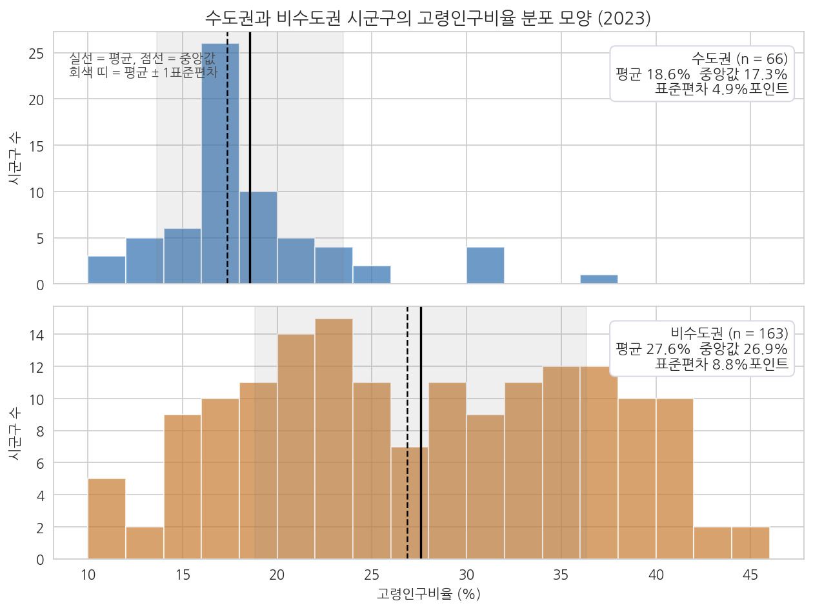
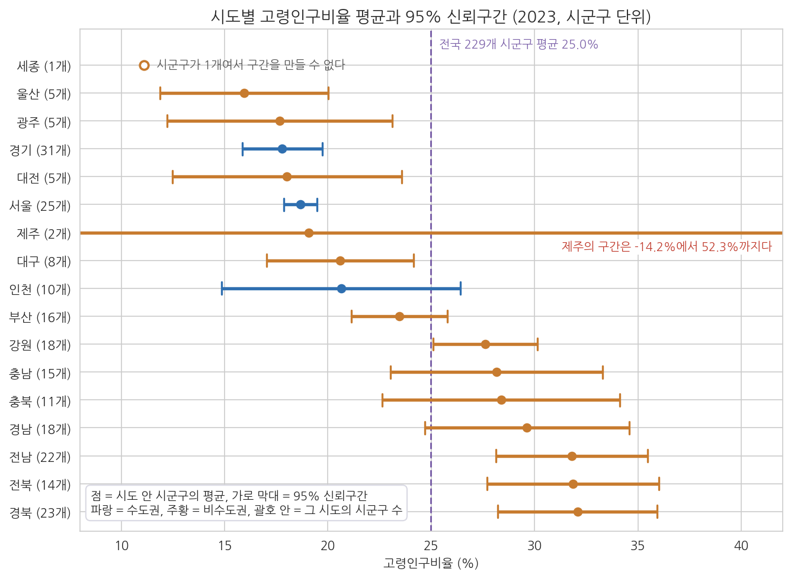
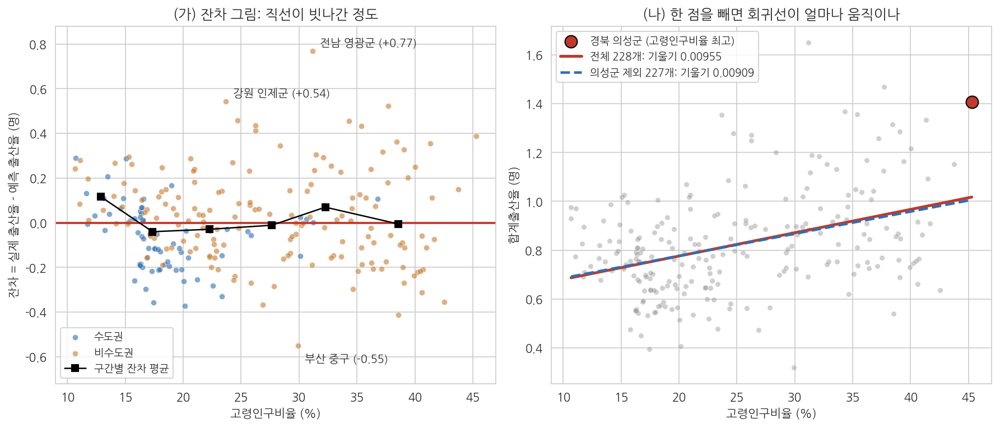
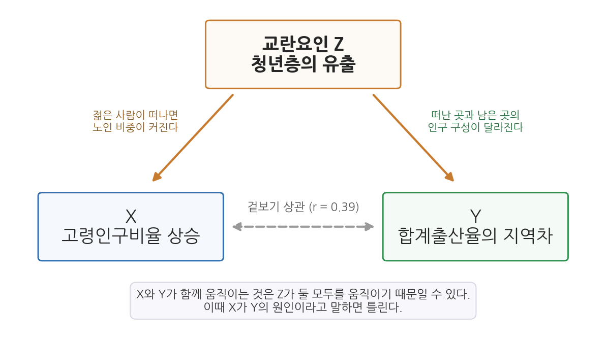

10주차 2회차. 에이전트로 통계 분석하기
최종 수정: 2026-09-18 · 이 교재는 학기 중에도 계속 업데이트됩니다
이 실습에서 하는 것
1회차에서 t검정, 회귀, p값, 그리고 상관과 인과의 구분을 원리로 배웠다. 이번 실습에서는 그 도구들을 에이전트에게 실행시키고, 나온 결과표를 읽고, 에이전트가 쓴 해석문에서 과잉해석을 잡아내고, 최종적으로 정책 문장으로 번역한다. 1회차에서 배운 개념은 그것이 필요한 단계에서 화면에 나온 결과를 놓고 다시 짚는다. 단계마다 있는 "짚고 가기"가 그 자리이고, 지시문을 입력하기 전에 알아야 할 것이 있으면 "먼저 알아 둘 것"으로 앞에 둔다. 계산은 전부 에이전트가 한다. 여러분이 훈련하는 것은 결과표를 읽는 눈과 해석의 선을 지키는 감각이다.
순서는 분석가가 실제로 일하는 순서를 따른다. 검정을 돌리기 전에 데이터의 생김새부터 확인하고(2.1), 두 집단을 비교하고(2.2), 그 차이가 얼마나 큰지를 p값과 나란히 읽고(2.3), 같은 절차를 다른 변수로 반복한 뒤(2.4) 같은 절차를 17개 시도로 넓혀 평균마다 신뢰구간을 붙이고(2.5), 회귀를 돌린 뒤(2.6) 직선이 데이터에 잘 맞는지와 한두 지역이 결과를 흔들지 않는지 진단하고(2.7), 에이전트의 해석문을 심사하고(2.8), 그 심사 기준을 스킬로 굳혀 두고(2.9), 새 대화에서 숫자를 독립적으로 검산한 다음(2.10), 정책 문장으로 옮긴다(2.11). 마지막 선택 심화(2.12)에서는 통제변수 하나를 넣으면 결과가 어떻게 달라지는지 본다.
이 실습이 끝나면 다음이 만들어져 있어야 한다.
- 두 집단의 분포 모양과 흩어짐을 비교한 표와 그림 (분석 전 가정 확인)
- 수도권 vs 비수도권 고령인구비율 비교(t검정) 결과표와 그 해석, 그리고 평균 차이의 신뢰구간과 효과 크기
- 같은 비교 절차를 네 변수(고령인구비율, 합계출산율, 인구증가율, 유소년인구비율)로 반복한 결과표와, p값이 아니라 효과 크기로 읽은 요약
- 17개 시도별 고령인구비율 평균과 95% 신뢰구간을 정리한 표, 두 시도의 순위를 말할 수 있는지 판정한 표, 그리고 시도별 오차막대 그림
- 고령인구비율과 합계출산율의 회귀 결과(계수, R제곱)와 산점도 그림, 잔차 그림, 한 지역을 빼고 다시 돌린 비교표
- 에이전트의 과잉해석을 잡아 교정한 기록
- 해석문 심사 스킬
.claude/skills/interp-check/SKILL.md와 그 스킬이 만든 심사 기록 두 건 (2.8의 교정본과 2.11의 정리 초안) - 새 대화에서 결과표의 숫자 네 개를 원자료로부터 다시 계산한 독립 검산
- 위 결과를 정책 보고서의 언어로 옮긴 사실·해석·제언 세 층의 정리
특히 이번 실습에는 "에이전트가 통계적으로 맞는 계산을 해 놓고 해석에서 틀리는" 장면이 등장한다. 9주차까지의 검증이 주로 숫자의 검증이었다면, 이번 주부터는 문장의 검증이 더해진다. 에이전트가 틀리는 장면은 모두 여섯 번 나온다. 효과 크기를 원인의 증거로 읽는 장면과 p값을 "차이가 있을 확률"로 뒤집어 설명하는 장면(2.3), 신뢰구간이 겹치는 것을 "차이가 없다"로 옮겨 적는 장면(2.5), 계산은 맞는데 상관을 인과로 서술하는 장면(2.8), 결과표에서 빠져서는 안 될 관측치 수가 빠진 장면(2.12), 그리고 두 숫자가 서로 다른데 어느 쪽도 틀리지 않은 장면(2.10)이다. 마지막 것은 엄밀히 말해 틀린 것이 아니라 우리 지시가 모호했던 경우인데, 실무에서 가장 자주 시간을 잡아먹는 종류라 함께 다룬다.
준비물
| 구분 | 내용 |
|---|---|
| 데이터 | data/sigungu_2023.csv (전국 229개 시군구 인구 지표, 출처: 행정안전부 주민등록인구통계·국가데이터처(옛 통계청) 인구동향조사, KOSIS에서 수집) |
| 도구 | VSCode + Claude Code, 3주차에 구축한 uv 기반 Python 환경 (pandas, scipy, matplotlib, seaborn, koreanize-matplotlib 사용) |
| 참고 코드 | code/ch09_analysis.py (t검정과 회귀의 기준 결과), code/ch10_practice.py (가정 확인, 신뢰구간과 효과 크기, 변수 반복, 시도별 평균과 신뢰구간, 잔차와 영향력, 독립 검산, 통제변수 회귀. 막힐 때 참조), code/fig10_practice.py (그림 10-5부터 10-7까지의 생성 코드) |
| 선수 내용 | 10주차 1회차(t검정·회귀·p값·교란요인), 9주차 실습(EDA와 그림 읽기), 7주차 실습(결측 확인, 파생변수 만들기), 4주차 실습(SKILL.md 만들기, 2.9에서 쓴다), 3주차(재현성과 uv 환경), 2주차(검증 손잡이, 같은 대화 재검산과 새 대화 독립 검산, 지시문 라이브러리) |
2.1 분석 전 가정 확인: 두 집단의 분포 모양과 흩어짐 보기
무엇을 왜 하는가. 체중계에 올라가기 전에 체중계가 평평한 바닥에 놓였는지 보듯, 검정을 돌리기 전에 데이터의 생김새를 본다. t검정은 두 가지를 전제로 설계된 도구다. 각 집단의 값이 대체로 종 모양(가운데가 볼록하고 양쪽으로 갈수록 드물어지는 모양)으로 퍼져 있다는 것과, 두 집단의 흩어짐이 엇비슷하다는 것이다. 앞의 전제를 정규성, 뒤의 전제를 등분산이라 부른다. 두 전제가 딱 들어맞는 데이터는 현실에 드물고, 관측치가 수십 개를 넘으면 모양이 좀 어긋나도 평균 비교는 꽤 견고하게 작동한다. 그래도 확인하는 이유는 두 가지다. 어느 방식의 t검정을 쓸지(흩어짐이 다르면 Welch 방식)를 근거를 갖고 정하기 위해서, 그리고 그림에서 예상 밖의 덩어리나 외딴 값이 보이면 검정보다 데이터 문제를 먼저 의심하기 위해서다. 9주차의 EDA를 통계 분석 직전에 한 번 더, 이번에는 비교할 두 집단에 초점을 맞춰 반복하는 셈이다.
"data 폴더의 sigungu_2023.csv를 읽고, 시도가 서울·경기·인천이면 수도권, 나머지는 전부 비수도권으로 나눈 뒤 고령인구비율의 분포를 집단별로 비교해 줘. (1) 집단별로 시군구 수, 최솟값, 1사분위수, 중앙값, 3사분위수, 최댓값, 표준편차, 왜도를 한 표로 정리하고, (2) 두 집단의 히스토그램을 위아래로 나란히 그려 평균과 중앙값 위치를 선으로 표시한 그림을 산출물 폴더에 저장해 줘(한글 폰트는 koreanize_matplotlib). (3) 두 집단의 분산이 몇 배 차이 나는지 계산하고, 정규성과 등분산을 확인하는 검정을 하나씩만 실행해서 p값을 보고해 줘. 검정 결과만 말하지 말고, 표와 그림에서 보이는 모양을 세 문장으로 설명해 줘. 코드는 code 폴더에 저장해 줘."
예상되는 에이전트의 행동과 결과. 에이전트가 파일을 읽어 열 이름을 확인하고, 집단을 나누어 요약 표를 만들고 그림을 그리는 코드를 작성해 승인을 구한 뒤 실행한다. 정규성 검정으로는 샤피로-윌크(Shapiro-Wilk) 검정을, 등분산 검정으로는 레빈(Levene) 검정을 고를 가능성이 높다. 검정의 이름은 여기서 한 번 보고 지나가면 된다. 앞으로 결과표에서 이 이름들을 만나면 "정규성 검정", "등분산 검정"으로 읽으면 충분하다. 화면에는 대략 다음과 같은 출력이 보인다.
[분포 요약] 수도권 n=66 평균 18.56 표준편차 4.93 왜도 1.57
비수도권 n=163 평균 27.58 표준편차 8.77 왜도 0.03
분산 비(비수도권/수도권) = 3.17
정규성 검정 p값: 수도권 0.001 미만, 비수도권 0.001
등분산 검정 p값: 1.5e-11
그림 저장: 산출물/assumption_check.png
에이전트가 요약해 주기 전에 scipy가 뱉은 원래 출력을 보여 달라고 하면 다음과 같은 줄이 나온다. 처음 보면 낯설지만 읽는 법은 간단하다. 괄호 안에 이름표가 붙은 값이 나열되어 있고, 우리에게 필요한 것은 그중 pvalue 하나다.
>>> stats.shapiro(수도권)
ShapiroResult(statistic=0.8584, pvalue=2.219e-06)
>>> stats.shapiro(비수도권)
ShapiroResult(statistic=0.9662, pvalue=0.0005152)
>>> stats.levene(수도권, 비수도권, center="median")
LeveneResult(statistic=50.5549, pvalue=1.4926e-11)
statistic은 검정이 계산한 통계량, pvalue가 p값이다. 세 줄 모두 p값이 0.05보다 작다. 정규성 검정 두 개는 "두 집단 다 완전한 종 모양은 아니다"라고 말하고, 등분산 검정은 "두 집단의 흩어짐이 같다고 보기 어렵다"라고 말한다. 앞의 둘은 아래 유의 박스에서 보듯 t검정을 포기할 이유가 되지 못하지만, 뒤의 하나는 방법 선택(Welch)의 근거가 된다. 같은 "p값 0.05 미만"이라도 결정에 쓰이는 무게가 다르다는 것을 여기서 한 번 짚고 간다.
요약 표는 표 10-1과 같은 값이어야 한다.
표 10-1. 수도권과 비수도권 고령인구비율의 분포 요약 (기준 결과)
| 항목 | 수도권 | 비수도권 |
|---|---|---|
| 시군구 수 | 66 | 163 |
| 최솟값 (%) | 10.69 | 10.68 |
| 1사분위수 (%) | 16.28 | 20.76 |
| 중앙값 (%) | 17.34 | 26.86 |
| 3사분위수 (%) | 19.84 | 35.30 |
| 최댓값 (%) | 36.81 | 45.28 |
| 표준편차 (%포인트) | 4.93 | 8.77 |
| 왜도 | 1.57 | 0.03 |
왜도는 분포가 한쪽으로 치우친 정도를 나타내는 수로, 0이면 좌우 대칭이고 양수면 오른쪽으로 긴 꼬리가 있다는 뜻이다. 표를 읽는 요령은 두 집단의 같은 행을 가로로 견주는 것이다. 최솟값은 거의 같은데(10.7%) 최댓값은 9%포인트 가까이 다르고, 1사분위수와 3사분위수 사이의 폭이 수도권은 3.6%포인트, 비수도권은 14.5%포인트다. 비수도권 시군구 절반이 20.8%에서 35.3% 사이에 넓게 깔려 있다는 뜻이다.

그림 10-5를 읽어 보자. 위가 수도권, 아래가 비수도권이고, 막대의 높이는 그 구간에 든 시군구의 수다. 실선이 평균, 점선이 중앙값, 회색 띠가 평균에서 표준편차만큼 좌우로 벌린 범위다. 위 패널에서 눈에 띄는 것은 16-18% 구간에 26개가 몰린 뾰족한 봉우리와 오른쪽으로 길게 늘어진 꼬리다. 30%를 넘는 수도권 시군구는 가평군, 양평군, 연천군, 강화군, 옹진군의 5곳뿐인데, 이 꼬리가 왜도 1.57을 만들고 평균(18.6%)을 중앙값(17.3%)보다 오른쪽으로 끌어당긴다. 아래 패널은 정반대다. 봉우리가 뚜렷하지 않고 10%대부터 45%까지 평평하게 깔려 있으며, 30%를 넘는 곳이 68곳, 40%를 넘는 곳도 14곳이다. 왜도 0.03으로 좌우는 대칭에 가깝지만 종 모양이라 하기는 어렵다. 회색 띠의 폭을 비교하면 위는 좌우 4.9, 아래는 8.8으로 1.8배 차이가 나고, 이를 제곱한 분산으로는 3.2배 차이다.
여기서 알 수 있는 것은 세 가지다. 첫째, 두 집단의 흩어짐이 뚜렷이 다르므로 등분산을 가정하는 t검정은 맞지 않고, 2.2에서 쓸 Welch 방식이 옳은 선택이다. 등분산 검정의 p값(소수점 아래 0이 10개)이 같은 말을 숫자로 해 준다. 둘째, 두 집단 다 교과서적인 종 모양은 아니지만 66개와 163개라는 관측치 수가 있으므로 평균 비교 자체는 안심하고 진행해도 된다. 셋째, 외딴 덩어리나 상식 밖의 값(음수, 100% 초과)은 없다. 데이터 문제로 되돌아갈 이유는 없다는 뜻이다.
정규성 검정은 관측치가 많을수록 사소한 어긋남도 p값 0.05 아래로 잡아낸다. 우리 데이터도 두 집단 모두 정규성 검정의 p값이 0.001 이하다. 그렇다고 t검정을 버려야 하는 것은 아니다. 관측치가 수십 개 이상이면 평균 비교는 모양의 어긋남에 견고하기 때문이다. 가정 확인에서 정말 결정에 영향을 주는 것은 그림에서 읽는 모양과 흩어짐의 차이이고, 그것이 방법(Welch)의 선택과 보고서의 방법 서술로 이어진다. 검정의 p값은 그 판단을 뒷받침하는 참고 수치다.
짚고 가기: 여기까지가 기술, 여기서부터가 추론. 표 10-1과 그림 10-5는 손에 쥔 229개 시군구를 있는 그대로 요약하고 묘사한 결과다. 이렇게 데이터가 어떤 모습인지 정리하는 작업을 기술통계라 부른다. 7주차에서 낸 평균과 중앙값, 9주차에서 그린 히스토그램과 상자그림이 모두 여기에 속하고, 방금 만든 분포 요약 표와 두 패널짜리 그림도 마찬가지다. 기술통계는 "무엇이 보이는가"에 답한다. 지금 화면에는 수도권 평균 18.56%와 비수도권 평균 27.58%가 나란히 보이고, 두 수는 9%포인트 떨어져 있다.
기술통계가 답하지 못하는 질문이 바로 다음에 온다. 이 9%포인트는 진짜 차이인가, 아니면 어쩌다 그렇게 나온 것인가. 보이는 것을 믿어도 되는지 판정하는 작업이 추론통계이고, 2.2부터 돌릴 t검정과 회귀가 그 도구다. 오늘 실습의 구조가 여기서 갈린다. 2.1까지는 보이는 것을 정리했고, 2.2부터는 보이는 것을 어디까지 믿어도 되는지를 따진다. (자세한 설명은 1회차 1.1)
검증. 세 가지를 확인한다. 첫째, 표 10-1의 시군구 수가 66과 163이고 합이 229인지 본다. 둘째, 표와 그림이 같은 데이터에서 나왔는지 중앙값 하나로 대조한다. 그림 10-5의 점선이 위 패널에서는 17과 18 사이, 아래 패널에서는 27 근처에 서 있는지 눈으로 확인하고, 표의 중앙값(17.34, 26.86)과 맞는지 본다. 어긋나면 표와 그림 중 하나가 다른 조건(예: 결측 처리, 집단 정의)으로 만들어진 것이다. 셋째, 에이전트가 덧붙인 세 문장 설명을 심사한다. "정규성 검정에서 p값이 0.05보다 작으므로 t검정을 사용할 수 없습니다"처럼 검정 p값 하나로 방법을 결정해 버리는 문장이 있으면, 위 유의 박스의 내용을 근거로 "관측치가 66개와 163개이므로 평균 비교는 진행하되, 흩어짐이 다르니 Welch 방식을 쓴다는 문장으로 고쳐 줘"라고 재지시한다.
2.2 집단 비교 실행과 결과표 읽기: 수도권 vs 비수도권
무엇을 왜 하는가. 이제 1회차 1.3절에서 본 비교를 여러분의 손으로 재현한다. 9주차 EDA에서 눈으로 보았던 수도권과 비수도권의 차이를, 이번에는 검정의 형식으로 확정한다. 지시문에서 눈여겨볼 것은 두 가지다. 수도권의 정의를 우리가 직접 명시한다는 것(에이전트에게 맡기면 세종이나 충청권을 어떻게 다룰지 제멋대로 정할 수 있다), 그리고 검정만이 아니라 기술통계(평균·표준편차·개수)를 함께 요구한다는 것이다. p값은 차이가 우연으로 보기 어려운지에만 답할 뿐 그 차이가 얼마나 큰지는 말해 주지 않아서, p값만 적힌 결과표는 반쪽짜리이기 때문이다. 2.1에서 확인한 대로 두 집단의 흩어짐이 다르므로 Welch 방식을 지시문에 못 박는다.
"data 폴더의 sigungu_2023.csv를 읽고 시군구를 두 집단으로 나눠 줘. 시도가 서울·경기·인천이면 수도권, 나머지는 전부 비수도권이야. 두 집단의 고령인구비율에 대해 (1) 집단별 시군구 수, 평균, 표준편차, 중앙값을 표로 정리하고, (2) 두 집단의 평균 차이를 계산하고, (3) scipy로 등분산을 가정하지 않는 Welch t검정을 실행해서 t값과 p값을 보고해 줘. 계산 코드는 code 폴더에 저장하고, 각 집단에 어떤 시도가 몇 개씩 들어갔는지도 함께 출력해 줘."
예상되는 에이전트의 행동과 결과. 파일을 읽고, pandas로 집단을 나누고, scipy의 t검정 함수를 실행하는 코드를 만들어 승인을 요청한 뒤, 결과를 표로 보고한다. 화면에는 대략 다음과 같은 출력이 보인다.
수도권 시도 구성: 경기 31, 서울 25, 인천 10 (합 66)
비수도권: 나머지 14개 시도, 163개 시군구
수도권: n=66, 평균=18.56, 표준편차=4.93, 중앙값=17.34
비수도권: n=163, 평균=27.58, 표준편차=8.77, 중앙값=26.86
평균 차이(비수도권 - 수도권) = 9.02 %포인트
Welch t검정: t = 9.85, p = 5.79e-19
결과는 표 10-2와 같은 값이어야 한다.
표 10-2. 수도권 vs 비수도권 고령인구비율 비교 (기준 결과)
| 항목 | 수도권 | 비수도권 |
|---|---|---|
| 시군구 수 | 66 | 163 |
| 평균 (%) | 18.56 | 27.58 |
| 표준편차 (%포인트) | 4.93 | 8.77 |
| 중앙값 (%) | 17.34 | 26.86 |
평균 차이 9.02%포인트, Welch t검정 결과 t = 9.85, p값은 0.05보다 비교도 안 되게 작다(소수점 아래 0이 18개). 화면의 p값이 5.79e-19처럼 보일 텐데, 이는 "10을 19번 나눈 크기"라는 과학적 표기법으로, 사실상 0에 가까운 수라는 뜻이다.
여기서도 scipy의 원래 출력을 한 번 보고 가자. 에이전트에게 "검정 함수가 돌려준 값을 그대로 보여 줘"라고 하면 다음 한 줄이 나온다.
>>> stats.ttest_ind(비수도권, 수도권, equal_var=False)
TtestResult(statistic=9.8467, pvalue=5.7909e-19, df=204.014)
세 값이 들어 있다. statistic이 t값 9.85, pvalue가 p값, df가 자유도(degrees of freedom) 204.014다. 자유도는 검정이 판정에 쓴 정보의 양을 나타내는 수로, 관측치가 229개인데 204로 나온 것은 Welch 방식이 두 집단의 흩어짐이 다른 것을 보정하면서 정보의 양을 조금 깎았기 때문이다. 자유도를 정확히 이해할 필요는 없지만, 2.3에서 신뢰구간을 계산할 때 이 204라는 숫자가 다시 나오므로 여기서 나왔다는 것만 기억해 두자. 참고로 흩어짐이 같다고 가정하는 보통의 t검정(Student 방식)을 돌리면 같은 데이터에서 t = 7.86, 자유도 227이 나온다. 결론은 같지만 숫자가 다르므로, 보고서에는 어느 방식을 썼는지 반드시 적는다.
결과표 읽는 순서. 결과를 받으면 다음 순서로 읽는 습관을 들이자. ① 각 집단의 개수(n)부터 본다. 66 + 163 = 229로 전체와 맞는가. ② 평균 차이의 크기와 방향을 본다(비수도권이 9%포인트 높다). ③ 그다음에야 t와 p를 본다(이 차이는 우연으로 보기 어렵다). p값부터 보는 습관은 크기를 잊게 만든다.
짚고 가기: t = 9.85가 말하는 것. 화면의 t값 9.85는 관찰된 차이가 우연한 출렁임의 몇 배인지를 나타내는 수다. 만드는 법은 나눗셈 하나다. 두 집단의 평균 차이 9.02%포인트를, 우연만으로 생길 만한 차이의 기준 크기로 나눈다. 그 기준 크기를 표준오차라 부르고 이 데이터에서는 0.916%포인트인데, 9.02를 0.916으로 나누면 9.85가 나온다. 곧 관찰된 차이가 우연이 만들어 낼 만한 크기의 약 10배라는 뜻이다. 우연의 출렁임은 기껏해야 그 기준의 한두 배, 크게 잡아도 두세 배를 만들어 낼 뿐이므로, t의 절댓값이 대략 2를 넘으면 우연으로 보기 어렵다고 판단하는 것이 관례다.
기준 크기가 어떻게 정해지는지도 화면의 숫자에 다 들어 있다. 각 집단 안에서 값이 심하게 흩어져 있을수록(표준편차 4.93과 8.77) 어쩌다 큰 값들이 몰릴 수 있으므로 출렁임이 커지고, 집단의 관측치가 적을수록(66개와 163개) 몇 개의 우연이 평균을 크게 흔들 수 있으므로 역시 커진다. 이 자료는 흩어짐이 작지 않은 대신 관측치가 229개로 넉넉해서 기준이 0.916%포인트로 작게 잡혔고, 그래서 t가 크게 나왔다. 옆의 p값 5.79e-19는 "두 집단이 실제로 같다면 우연만으로 이만한 차이가 관찰될 확률"이며, 이만큼 작으면 그 가정을 유지하기 어렵다고 보아 "차이는 우연이 아니다"라고 결론 내린다. (자세한 설명은 1회차 1.3, 1.5)
방금 검정을 돌린 자료는 표본이 아니라 전국 229개 시군구 전부다. 전체를 다 갖고 있는데 무슨 우연을 따지느냐는 의문이 이 시점에 나온다. 표준적인 답은 2023년의 값이 수많은 우연이 겹쳐 만들어진 하나의 결과라는 것이다. 그해에 누가 태어나고 누가 이사했는지에는 무수한 우연이 작용했고, 시간을 되돌려 2023년을 다시 살게 한다면 각 시군구의 수치는 조금씩 다르게 나왔을 것이다. 우리가 가진 자료는 "일어날 수 있었던 여러 2023년" 중 하나인 셈이므로, 전수 자료에서도 "이 차이가 그런 출렁임만으로 생길 만한 크기인가"라는 질문은 성립한다. 다만 이런 자료에서 p값은 참고 지표로 받아들이고 차이의 크기를 함께 보고하는 것이 좋은 관행이며, 그 크기를 재는 두 숫자를 2.3에서 붙인다. (자세한 설명은 1회차 1.2)
검증. 집단 분류와 개수를 먼저 확인한다. 출력된 시도 목록에서 수도권에 서울·경기·인천만 들어 있고 세종·충남 같은 지역이 슬쩍 끼지 않았는지 보고, 66과 163의 합이 229인지 본다. 그다음 평균 하나를 교차 확인한다. 에이전트에게 "방금과 다른 방법으로(예: 피벗테이블로) 집단별 평균을 다시 계산해서 아까 값과 일치하는지 보여 줘"라고 시키면 같은 값이 두 경로에서 나오는지 확인할 수 있다. 2주차에서 배운 같은 대화 재검산이며, 새 대화에서 하는 독립 검산은 2.10에서 따로 한다.
2.3 차이의 크기 읽기: 신뢰구간과 효과 크기를 p값 옆에 놓기
무엇을 왜 하는가. 1회차 1.5절에서 p값은 차이의 크기가 아니라고 배웠다. 그렇다면 크기는 무엇으로 말하는가. 평균 차이 9.02%포인트가 첫 번째 답이지만, 여기에 두 숫자를 더 붙이면 결과표가 훨씬 정직해진다. 하나는 평균 차이의 95% 신뢰구간이다. 1회차 1.2절의 여론조사 오차범위처럼, "2023년을 다시 살게 한다면 두 집단의 차이는 대략 어느 범위에 들 것인가"를 알려 준다. 다른 하나는 효과 크기(effect size)다. 같은 5점 차이도 10점 만점 시험과 100점 만점 시험에서 무게가 다르듯, 평균 차이를 그 변수의 흩어짐이라는 자로 다시 잰 값이다. 1회차 1.3절 마지막 문단에서 "출산율 0.187명 차이는 결코 작지 않다"고 했던 판단을 숫자로 만드는 도구다.
"2.2의 t검정 결과에 두 가지를 덧붙여 줘. (1) 수도권과 비수도권 고령인구비율 평균 차이의 95% 신뢰구간을 Welch 방식의 표준오차와 자유도로 계산하고, 계산에 쓴 표준오차, 자유도, t임계값을 함께 보고해 줘. (2) 효과 크기로 Cohen의 d를 계산하되, 분모로 쓴 합동 표준편차가 얼마인지 보여 주고, d가 '평균 차이가 집단 안 흩어짐의 몇 배인가'를 뜻한다는 설명을 한 문장 붙여 줘. (3) 같은 계산을 합계출산율에 대해서도 해서 두 변수를 한 표에 나란히 놓아 줘. 결측이 있으면 몇 개를 뺐는지 밝혀 줘."
예상되는 에이전트의 행동과 결과. 에이전트가 2.2의 코드에 계산을 덧붙여 실행하고, 표 10-3과 같은 표를 보고한다.
표 10-3. 두 집단 차이의 크기: 신뢰구간과 효과 크기 (기준 결과)
| 항목 | 고령인구비율 | 합계출산율 |
|---|---|---|
| 시군구 수 (수도권 / 비수도권) | 66 / 163 | 66 / 162 |
| 평균 차이 (비수도권 - 수도권) | 9.02 %포인트 | 0.187명 |
| 95% 신뢰구간 | 7.22 - 10.83 %포인트 | 0.138 - 0.235명 |
| t값 (Welch) | 9.85 | 7.58 |
| 합동 표준편차 | 7.86 %포인트 | 0.196명 |
| 효과 크기 d | 1.15 | 0.95 |
신뢰구간이 어떻게 나오는지는 1회차 1.3절의 숫자를 그대로 이어 쓰면 된다.
1단계. 평균 차이 = 27.58 - 18.56 = 9.02 (%포인트)
2단계. 우연한 출렁임의 기준 크기(표준오차) = 0.916, 자유도 약 204,
그 자유도에서 95%에 해당하는 t임계값 = 1.972
3단계. 오차 한계 = 1.972 x 0.916 = 약 1.81
4단계. 신뢰구간 = 9.02 - 1.81 에서 9.02 + 1.81 = 약 7.2 에서 10.8 (%포인트)
읽는 법은 이렇다. 관찰된 차이는 9.02%포인트이지만, 우연의 출렁임을 감안하면 진짜 차이는 대략 7%포인트에서 11%포인트 사이 어디쯤이다. 구간 안에 0이 없다는 것은 p값이 0.05보다 작다는 것과 같은 말인데, 신뢰구간은 거기에 더해 차이가 아무리 작게 잡아도 7%포인트는 된다는 크기 정보를 준다. 효과 크기 d는 평균 차이 9.02를 합동 표준편차 7.86으로 나눈 1.15다. 두 집단의 평균이 집단 안 흩어짐의 1.15배만큼 떨어져 있다는 뜻이다. 관례상 d가 0.2면 작은 차이, 0.5면 중간, 0.8이면 큰 차이로 부르므로 1.15는 큰 차이에 속한다. 합계출산율 쪽도 보자. 0.187명은 절대 숫자로는 작아 보이지만 d는 0.95로 역시 큰 차이다. 과제 10-B의 질문("출산율 차이는 고령화 차이보다 작은 차이인가")에 대한 답이 이 표에 들어 있다. 두 변수는 단위가 달라 평균 차이로는 비교할 수 없지만, 흩어짐의 자로 재면 비슷한 급의 차이다.
짚고 가기: 왜 점 하나가 아니라 범위로 말하는가. 표 10-3에서 새로 생긴 줄이 신뢰구간이다. 화면의 7.22-10.83%포인트는 여론조사 보도 끝에 붙는 "표본오차는 95% 신뢰수준에서 ±3.1%포인트"와 같은 종류의 표시다. 뜻은 이렇다. 이번 자료에서 나온 차이는 9.02%포인트이지만 우연의 출렁임을 감안하면 진짜 차이는 7%포인트에서 11%포인트 사이 어디쯤이며, 이런 식으로 범위를 만들면 스무 번에 열아홉 번쯤은 그 안에 진짜 값이 들어온다. 표본에서 나온 숫자를 점 하나가 아니라 범위로 받아들이는 것, 이것이 통계적으로 사고하는 사람의 습관이다. 지지율 42%와 40%의 차이를 오차가 ±3.1%포인트일 때 "경합"이라 보도하는 것도 같은 습관이다.
효과 크기 d는 다른 일을 한다. 신뢰구간이 "이 차이가 어디쯤에 있는가"를 말한다면 d는 "이 차이가 큰 차이인가"를 말한다. 두 숫자가 함께 있어야 하는 이유는 p값 칸에 이 두 가지가 하나도 담기지 않기 때문이다. p값은 우연으로 보기 어려운지에만 답하고 차이의 크기는 말하지 않는다. 관측치가 아주 많으면 하찮은 차이도 p값이 0.05 아래로 내려간다. 전 국민 자료로 두 지역의 평균 통근시간을 비교하면 1분 차이도 유의해지는데, 우연이 아닌 것은 맞지만 1분 차이에 정책을 바꿀 이유는 없다. "통계적으로 유의하다"의 유의는 "중요하다"는 일상어가 아니라 "우연으로 보기 어렵다"는 좁은 뜻이다. 그래서 보고서에는 p값 옆에 차이의 크기 9.02%포인트와 그 범위 7.22-10.83%포인트를 반드시 함께 적는다. (자세한 설명은 1회차 1.2, 1.5)
에이전트가 틀리는 장면 (첫째). 표는 정확한데 에이전트가 표 아래에 덧붙이는 해설에서 선을 넘는 일이 있다. 예를 들어 다음과 같은 문장이 돌아왔다고 하자.
"효과 크기 d = 1.15는 매우 큰 값으로, 수도권 여부가 시군구 고령화 수준을 결정하는 핵심 원인임을 확인할 수 있다."
크다는 것과 원인이라는 것은 다른 이야기다. d는 두 집단의 평균이 얼마나 떨어져 있는지를 잴 뿐, 무엇이 그 간격을 만들었는지는 말해 주지 않는다. 수도권 여부가 고령화를 만든 것이 아니라 청년층의 이동 같은 배경이 두 가지 모두를 갈라놓았을 수 있다는 것을 1회차 1.6절에서 배웠다. 발견하는 방법은 단어 사냥이다. "원인", "결정", "확인"이 결과 해설에 보이면 멈춘다. 그리고 재지시한다. "효과 크기는 차이의 크기이지 원인의 증거가 아니야. '원인', '결정한다'를 빼고, 수도권과 비수도권 시군구의 고령인구비율 평균이 집단 안 흩어짐의 약 1.15배만큼 떨어져 있다는 사실만 서술해 줘." 수정된 문장은 "두 집단의 고령인구비율 평균 차이는 집단 안 흩어짐의 약 1.15배로, 관례상 큰 차이에 해당한다" 정도가 되어야 한다.
에이전트가 틀리는 장면 (둘째). 같은 해설에서 p값 쪽으로도 자주 선을 넘는다. 통계학에서 가장 흔한 오해라 할 만한 문장이 이것이다.
"고령인구비율의 p값은 5.79e-19로 사실상 0입니다. 즉 수도권과 비수도권 사이에 차이가 있을 확률이 거의 100%라는 뜻이며, 효과 크기 1.15와 함께 보면 결론은 확정적입니다."
첫째, 틀림. p값을 "차이가 있을 확률"로 뒤집어 읽었다. p값은 차이가 없다고 가정했을 때 우연만으로 이만한 차이가 관찰될 확률이지, 차이가 있을 확률이 아니다. 앞의 것은 차이가 없다는 가정 위에서 계산한 값이고 뒤의 것은 차이가 있는지 없는지를 두고 매기는 확률이라 아예 다른 질문이며, 1에서 p값을 뺀 값이 차이가 있을 확률이 되는 일도 없다. 뒤따라 나온 "결론은 확정적"이라는 말도 과하다. 아무리 작은 p값도 이 자료가 우연의 출렁임을 벗어났다는 말일 뿐, 집단을 어떻게 나누었는지나 무엇이 그 차이를 만들었는지에 대해서는 한마디도 하지 않는다.
둘째, 발견. 단어 사냥으로 잡는다. "차이가 있을 확률", "우연일 확률", "귀무가설이 참일 확률", "신뢰도 99.9%", "확정적" 같은 표현을 찾는다. p값 뒤에 붙은 확률의 주어가 무엇인지 되물어 보면 대개 여기서 걸린다.
셋째, 재지시. "p값을 '차이가 있을 확률'로 설명했는데 이는 잘못이야. p값은 두 집단에 차이가 없다고 가정했을 때 우연만으로 관찰된 만큼의 차이가 나올 확률이야. (1) 그 정의에 맞게 문장을 고치고, (2) 확률을 말하는 대신 차이의 크기를 말하는 문장을 덧붙이되 신뢰구간과 효과 크기를 함께 써 줘."
넷째, 수정. 고쳐진 문장은 "고령인구비율의 p값은 5.79e-19다. 두 집단이 실제로 같다면 우연만으로 9.02%포인트짜리 차이가 관찰될 가능성은 사실상 없다는 뜻이다. 차이의 크기는 9.02%포인트이고, 95% 신뢰구간은 7.22%포인트에서 10.83%포인트, 효과 크기 d는 1.15다" 정도가 되어야 한다.
검증. 세 가지를 손으로 확인한다. 첫째, 신뢰구간의 한가운데에 평균 차이가 놓이는가. 7.22와 10.83의 중간은 9.02다. 어긋나면 구간이 다른 차이(예: 수도권에서 비수도권을 뺀 값)로 계산된 것이다. 둘째, d를 직접 나눠 본다. 9.02 나누기 7.86은 1.15다. 합동 표준편차가 두 집단의 표준편차(4.93, 8.77) 사이에 있는지도 본다. 사이를 벗어나면 분모가 잘못 계산된 것이다. 셋째, 해설 문장을 두 벌의 단어로 훑는다. "원인", "결정", "효과가 있다"가 있으면 크기를 원인으로 읽은 것이고, "차이가 있을 확률", "우연일 확률", "확정적"이 있으면 p값을 뒤집어 읽은 것이다. 하나라도 걸리면 위와 같이 재지시한다.
2.4 같은 절차를 다른 변수로 반복하기: 인구증가율과 유소년인구비율
무엇을 왜 하는가. 분석 실무의 대부분은 새 방법을 배우는 일이 아니라 익힌 절차를 다른 변수에 반복하는 일이다. 2.1부터 2.3까지 만든 절차, 곧 분포를 확인하고 Welch t검정을 돌린 뒤 신뢰구간과 효과 크기를 붙이는 절차를 이번에는 두 변수에 그대로 적용한다. 반복하는 이유는 두 가지다. 첫째, 지시문을 통째로 새로 쓰지 않고 변수 이름만 갈아 끼우면 된다는 것을 확인하기 위해서다. 그것을 확인하고 나면 앞으로 어떤 변수를 만나도 같은 틀로 접근할 수 있다. 둘째, 이쪽이 더 중요한데, 이번 두 변수에서는 2.3에서 배운 "p값과 크기를 나란히 읽기"가 실제로 판단을 갈라놓는다. 고령인구비율은 p값의 소수점 아래 0이 18개였고 효과 크기도 1.15로 컸다. 새 변수 둘은 p값이 0.05보다 작기는 하지만 크기가 그만 못하다. 네 결과를 한 표에 놓고 "모두 유의하다"고 한 줄로 요약해 버리면 무엇이 사라지는지 눈으로 보게 될 것이다. 한 가지가 더 있다. 유소년인구비율은 데이터에 없는 열이라 에이전트가 유소년 인구와 총인구로 직접 만들어야 한다. 7주차에서 배운 파생변수 만들기가 검증할 항목으로 하나 늘어나는 셈이다.
"data 폴더의 sigungu_2023.csv에서 2.2와 2.3에서 한 것과 똑같은 절차를 두 변수에 대해 반복해 줘. (1) 먼저 유소년인구비율이라는 열을 유소년 인구를 총인구로 나눈 뒤 100을 곱해 만들고, 만든 식과 함께 강릉시의 값을 계산 과정까지 보여 줘. (2) 인구증가율과 유소년인구비율 각각에 대해 수도권과 비수도권의 시군구 수, 평균, 표준편차, 평균 차이, Welch t값, p값, 95% 신뢰구간, 효과 크기 d를 계산해 줘. (3) 앞서 계산한 고령인구비율과 합계출산율까지 네 변수를 한 표에 나란히 놓고, 변수마다 결측이 몇 개인지도 표에 넣어 줘. (4) 표를 보고 네 변수의 p값과 효과 크기를 견주어 세 문장으로 설명하되, '모두 유의하다'로 뭉뚱그리지 말고 변수마다 다른 점을 말해 줘. 코드는 code 폴더에 저장해 줘."
예상되는 에이전트의 행동과 결과. 에이전트가 파생변수를 먼저 만들고, 2.3의 계산을 함수 하나로 묶어 네 변수에 반복해서 적용한다. 화면에는 대략 다음과 같은 출력이 보인다.
[파생변수] 유소년인구비율 = 유소년 / 총인구 x 100
예: 강릉시 19,863 / 211,381 x 100 = 9.3968 (%)
[반복 결과] 차이는 모두 (비수도권 - 수도권)
변수 n(수도권/비수도권) 차이 95% 신뢰구간 t p d
고령인구비율 66 / 163 +9.023 [ 7.216, 10.829] 9.85 5.79e-19 +1.15
합계출산율 66 / 162 +0.187 [ 0.138, 0.235] 7.58 1.99e-12 +0.95
인구증가율 66 / 163 -0.715 [-1.284, -0.145] -2.49 1.45e-02 -0.42
유소년인구비율 66 / 163 -1.115 [-1.877, -0.352] -2.89 4.51e-03 -0.41
결측: 합계출산율 1건(경북 군위군), 나머지 세 변수는 0건
결과는 표 10-4와 같은 값이어야 한다.
표 10-4. 같은 절차를 네 변수로 반복한 결과 (기준 결과)
| 항목 | 고령인구비율 | 합계출산율 | 인구증가율 | 유소년인구비율 |
|---|---|---|---|---|
| 시군구 수 (수도권 / 비수도권) | 66 / 163 | 66 / 162 | 66 / 163 | 66 / 163 |
| 수도권 평균 | 18.56 % | 0.690 명 | 0.03 % | 10.42 % |
| 비수도권 평균 | 27.58 % | 0.877 명 | -0.69 % | 9.31 % |
| 표준편차 (수도권 / 비수도권) | 4.93 / 8.77 | 0.147 / 0.213 | 2.12 / 1.53 | 2.57 / 2.82 |
| 차이 (비수도권 - 수도권) | +9.02 %포인트 | +0.187 명 | -0.71 %포인트 | -1.11 %포인트 |
| 95% 신뢰구간 (하한) | 7.22 | 0.138 | -1.28 | -1.88 |
| 95% 신뢰구간 (상한) | 10.83 | 0.235 | -0.14 | -0.35 |
| t값 (Welch) | 9.85 | 7.58 | -2.49 | -2.89 |
| p값 | 0.001 미만 | 0.001 미만 | 0.015 | 0.005 |
| 효과 크기 d | 1.15 | 0.95 | -0.42 | -0.41 |
표는 세로로 한 열씩이 아니라 가로로 한 행씩 읽는다. p값 행만 보면 네 변수가 모두 0.05 아래이므로 "네 지표 모두 수도권과 비수도권 사이에 유의한 차이가 있다"는 한 문장으로 끝난다. 그런데 효과 크기 행을 보면 이야기가 둘로 갈라진다. 앞의 두 변수는 d가 1.15와 0.95로 관례상 큰 차이인 반면, 뒤의 두 변수는 절댓값이 0.42와 0.41로 중간(0.5)에도 못 미친다. 신뢰구간 행이 같은 말을 다른 방식으로 해 준다. 고령인구비율의 구간은 7.22에서 10.83으로 0에서 멀찍이 떨어져 있지만, 인구증가율의 구간은 0에 가까운 쪽 끝이 -0.14로 0에 거의 닿아 있다. 차이가 아무리 작게 잡아도 0.14%포인트는 된다는 뜻인데, 229개 시군구의 인구증가율이 -3.19%에서 +11.05% 사이에 퍼져 있고 그중 90%가 -2.24%에서 +2.55% 안에 든다는 점을 생각하면 이 하한은 "차이가 없는 것과 구별하기 어려운 크기"에 가깝다. 부호도 함께 읽어야 한다. 뒤의 두 변수는 차이가 음수, 곧 비수도권 쪽이 낮다. 비수도권 시군구는 인구가 평균적으로 줄고 있고(-0.69%), 유소년 비중도 낮다(9.31%로 수도권의 10.42%보다 1.11%포인트 낮다).
여기서 한 가지를 짚고 가야 한다. 표 안에 서로 어긋나 보이는 두 숫자가 있다. 비수도권은 합계출산율이 더 높은데(0.877명 대 0.690명) 유소년인구비율은 더 낮다(9.31% 대 10.42%). 어느 쪽이 틀린 것인가. 둘 다 맞다. 합계출산율은 여성 한 명이 평생 낳을 것으로 기대되는 아이 수이고, 유소년인구비율은 지금 그 지역에 사는 사람 중 유소년이 차지하는 몫이다. 아이를 낳을 나이의 인구 자체가 적으면 출산율이 높아도 태어나는 아이 수는 적고, 그 결과 유소년의 몫은 작아진다. 비율의 분모가 무엇인지를 확인하지 않으면 "출산율이 높은데 아이가 적다"는 문장을 모순으로 오해하게 된다. 2.10에서도 같은 종류의 사건을 한 번 더 만난다.
p값 0.015와 5.79e-19는 둘 다 "0.05보다 작다"는 같은 판정을 받는다. 뒤의 것이 소수점 아래로 열일곱 자리쯤 더 작지만, 그렇다고 차이가 그만큼 더 크다는 뜻은 아니다. p값은 크기를 재는 자가 아니기 때문이다. 반대로 p값이 0.015로 상대적으로 큰 인구증가율의 결과가 그래서 덜 중요하다는 뜻도 아니다. 중요한지 아닌지는 그 0.71%포인트가 정책적으로 무엇을 뜻하는지가 정한다. 표 10-4에서 크기를 말해 주는 칸은 차이, 신뢰구간, 효과 크기 세 개이고, p값 칸은 "우연으로 보기 어려운가"라는 예/아니오 판정 하나만 담고 있다. 보고서에 네 결과를 옮길 때는 "모두 유의했다"가 아니라 "고령인구비율과 합계출산율에서는 큰 차이가, 인구증가율과 유소년인구비율에서는 중간에 못 미치는 크기의 차이가 관찰되었다"처럼 크기를 함께 적는다.
짚고 가기: 오늘 검정을 네 번 했다는 사실. 표 10-4에는 검정이 네 번 들어 있고, 이 사실 자체가 결과를 읽을 때 따져야 할 조건이다. p값 0.05의 뜻을 뒤집으면 진짜 차이가 하나도 없어도 검정을 스무 번 하면 평균 한 번은 우연히 0.05 아래가 나온다는 말이 된다. 검정 횟수가 늘수록 우연이 걸려들 기회도 늘어난다.
그렇다면 오늘의 네 결과는 믿어도 되는가. 믿어도 된다. 네 변수를 미리 정해 놓고 넷을 전부 표에 실었기 때문이다. 문제가 되는 것은 변수를 이것저것 검정해 보고 유의하게 나온 것만 골라 보고하는 경우이고, 이를 p해킹이라 부른다. 고의가 아니어도 일어난다. 에이전트에게 "이 데이터에서 유의한 관계를 모두 찾아 줘"라고 지시하는 것이 정확히 그 함정으로 걸어 들어가는 지시다. 열두 개 열을 가진 이 파일에서 그렇게 시키면 검정이 수십 번 돌아가고, 유의한 것만 추려진 목록이 돌아온다. 탐색은 자유롭게 하되 탐색에서 건진 것은 확인된 사실이 아니라 앞으로 검증할 가설로 취급하고, 결과를 보고할 때는 몇 번의 검정 끝에 나온 것인지를 함께 밝힌다. (자세한 설명은 1회차 1.5)
검증. 네 가지를 확인한다. 첫째, 파생변수를 손으로 검산한다. 강릉시의 유소년 19,863을 총인구 211,381로 나누면 0.09397이고 100을 곱하면 9.40%로, 에이전트의 출력 9.3968과 맞는다. 유소년 대신 생산가능인구를 쓰거나 분모를 총인구가 아닌 다른 열로 잡는 실수가 종종 나오는 자리다. 둘째, 개수와 결측이다. 유소년인구비율은 결측이 없으므로 66과 163이어야 하고, 합계출산율만 162여야 한다. 네 변수의 관측치 수가 모두 같게 적혀 있다면 결측 처리가 빠진 것이다. 셋째, 부호의 방향이다. 에이전트에게 "인구증가율이 0보다 큰 시군구가 권역별로 몇 곳인지 세어 줘"라고 시키면 수도권 66곳 중 25곳(37.9%), 비수도권 163곳 중 28곳(17.2%)이 나온다. 표의 차이 부호가 음수(비수도권이 낮음)인 것과 같은 방향을 가리켜야 한다. 부호와 개수가 반대라면 두 집단을 빼는 순서가 뒤바뀐 것이다. 넷째, 요약 문장 심사다. "네 지표 모두 통계적으로 유의한 차이를 보였다"로 끝나는 문장이 있으면 유의 박스의 내용을 근거로 "변수마다 효과 크기가 얼마인지 밝히고, 크기가 큰 변수와 그렇지 않은 변수를 나누어 서술해 줘"라고 재지시한다.
2.5 시도별 평균에 신뢰구간 붙이기: 관측치가 적으면 무엇이 넓어지나
무엇을 왜 하는가. 2.2부터 2.4까지는 229개 시군구를 수도권과 비수도권 두 덩어리로만 나누었다. 실무에서 더 자주 받는 질문은 "그래서 우리 시도는 어디쯤인가"다. 이번에는 같은 절차를 17개 시도에 그대로 적용해, 시도마다 소속 시군구의 고령인구비율 평균을 내고 그 옆에 95% 신뢰구간을 붙인다. 지시문을 통째로 새로 쓰지 않고 집단을 나누는 기준만 권역에서 시도로 갈아 끼우면 된다는 것도 여기서 확인하게 된다.
이 작업에는 덤이 하나 따라온다. 시도마다 시군구 수가 크게 다르다. 경기는 31개, 서울은 25개, 경북은 23개인데 울산과 광주와 대전은 5개씩이고 제주는 2개, 세종은 1개다. 같은 계산을 관측치 수가 다른 집단에 열일곱 번 나란히 적용하는 셈이라, 관측치가 적을 때 무엇이 어떻게 달라지는지가 표 한 장 안에 그대로 드러난다. 1회차 1.3절에서 "우연한 출렁임은 관측치가 적을 때 커진다"고 배운 문장을 실제 지역 이름과 함께 보게 된다. 여기서 만드는 표와 그림은 2.11의 정리와 14주차 최종 보고서에서 지역별 현황을 말할 때 그대로 쓰인다.
"data 폴더의 sigungu_2023.csv를 읽고 이번에는 권역이 아니라 시도별로 고령인구비율을 정리해 줘. (1) 시도마다 시군구 수, 평균, 표준편차, 표준오차, 평균의 95% 신뢰구간 하한과 상한, 구간의 폭을 한 표로 만들고 평균이 낮은 시도부터 정렬해 줘. 신뢰구간은 그 시도의 시군구 수에서 1을 뺀 자유도의 t임계값을 써서, 평균에서 t임계값 곱하기 표준오차만큼 좌우로 벌린 값이야. (2) 구간을 계산할 수 없는 시도가 있으면 0이나 그럴듯한 값으로 채우지 말고 빈칸으로 두고, 왜 계산할 수 없는지 표 아래에 한 줄로 적어 줘. (3) 17개 시도의 평균과 신뢰구간을 가로 막대로 보여 주는 그림을 그려 산출물 폴더에 저장해 줘. 평균이 낮은 시도가 위로 오게 하고, 수도권 세 시도는 파랑, 나머지는 주황으로 하고, 전국 229개 시군구 평균 위치에 세로 점선을 넣어 줘(한글 폰트는 koreanize_matplotlib). (4) 평균 순위가 이웃한 시도 쌍의 구간이 서로 겹치는지 모두 확인해서, 겹치는 쌍이 몇 쌍인지 세어 줘. 코드는 code 폴더에 저장해 줘."
예상되는 에이전트의 행동과 결과. 에이전트가 시도로 묶는 코드를 만들어 실행하고 표와 그림을 보고한다. 화면에는 대략 다음과 같은 출력이 보인다.
[시도별 고령인구비율] 평균이 낮은 시도부터
시도 n 평균 표준편차 표준오차 t임계값 CI하한 CI상한 폭
세종 1 11.095 - - - - - -
울산 5 15.945 3.273 1.464 2.776 11.881 20.009 8.128
경기 31 17.792 5.292 0.950 2.042 15.851 19.733 3.882
서울 25 18.675 1.938 0.388 2.064 17.875 19.476 1.600
제주 2 19.056 3.698 2.615 12.706 -14.173 52.285 66.458
인천 10 20.636 8.069 2.552 2.262 14.864 26.408 11.544
(중략)
경북 23 32.084 8.924 1.861 2.074 28.225 35.943 7.718
시도 수 17, 시군구 합 229
구간을 계산할 수 없는 시도: 세종 (시군구가 1개여서 흩어짐을 잴 수 없음)
평균 순위가 이웃한 15개 시도 쌍이 모두 겹침
그림 저장: 산출물/sido_ci.png
세종 줄을 눈여겨보라. 시군구가 하나뿐이면 그 하나가 곧 평균이므로 흩어짐을 잴 수 없고, 흩어짐을 모르면 표준오차도 신뢰구간도 만들 수 없다. 지시문에 빈칸으로 두라고 못 박아 두었는데도 이 칸에 0이나 0.00이 적혀 오는 일이 있다. 0은 "구간의 폭이 0", 곧 평균을 오차 없이 안다는 뜻이 되어 사실과 정반대가 되므로, 검증에서 가장 먼저 볼 칸이 여기다.
결과는 표 10-5와 같은 값이어야 한다.
표 10-5. 시도별 고령인구비율 평균과 95% 신뢰구간 (기준 결과, 평균이 낮은 시도부터)
| 시도 | 시군구 수 | 평균 (%) | 표준편차 (%포인트) | 구간 하한 (%) | 구간 상한 (%) | 구간 폭 (%포인트) |
|---|---|---|---|---|---|---|
| 세종 | 1 | 11.10 | 계산 불가 | 계산 불가 | 계산 불가 | 계산 불가 |
| 울산 | 5 | 15.95 | 3.27 | 11.88 | 20.01 | 8.13 |
| 광주 | 5 | 17.66 | 4.39 | 12.22 | 23.11 | 10.89 |
| 경기 | 31 | 17.79 | 5.29 | 15.85 | 19.73 | 3.88 |
| 대전 | 5 | 18.02 | 4.47 | 12.47 | 23.57 | 11.10 |
| 서울 | 25 | 18.68 | 1.94 | 17.88 | 19.48 | 1.60 |
| 제주 | 2 | 19.06 | 3.70 | -14.17 | 52.28 | 66.46 |
| 대구 | 8 | 20.59 | 4.26 | 17.02 | 24.15 | 7.13 |
| 인천 | 10 | 20.64 | 8.07 | 14.86 | 26.41 | 11.54 |
| 부산 | 16 | 23.46 | 4.38 | 21.12 | 25.79 | 4.67 |
| 강원 | 18 | 27.60 | 5.07 | 25.08 | 30.12 | 5.04 |
| 충남 | 15 | 28.16 | 9.28 | 23.02 | 33.29 | 10.28 |
| 충북 | 11 | 28.38 | 8.55 | 22.64 | 34.12 | 11.49 |
| 경남 | 18 | 29.63 | 9.96 | 24.68 | 34.58 | 9.90 |
| 전남 | 22 | 31.80 | 8.28 | 28.14 | 35.47 | 7.34 |
| 전북 | 14 | 31.84 | 7.20 | 27.69 | 36.00 | 8.32 |
| 경북 | 23 | 32.08 | 8.92 | 28.22 | 35.94 | 7.72 |
표를 읽는 요령은 평균 열과 구간 폭 열을 함께 보는 것이다. 평균 열만 보면 열일곱 개 시도가 11.10%부터 32.08%까지 깔끔하게 줄을 선다. 그런데 구간 폭 열은 1.60부터 66.46까지 마흔 배 넘게 벌어진다. 같은 자료, 같은 계산인데 어떤 시도의 평균은 소수점 첫째 자리까지 말할 수 있고 어떤 시도의 평균은 사실상 아무것도 말할 수 없다는 뜻이다. 제주 줄이 그 극단이다. 구간의 하한이 -14.17%이고 상한이 52.28%인데 고령인구비율이 음수인 지역은 있을 수 없다. 계산이 틀린 것이 아니라 시군구 2개로는 평균을 가늠할 수 없다는 사실이 숫자로 나온 것이다.

그림 10-6을 읽어 보자. 가로축이 고령인구비율이고, 세로로 시도가 평균이 낮은 순서로 늘어서 있다. 점이 그 시도 시군구들의 평균, 가로 막대가 95% 신뢰구간이며, 파랑이 수도권 세 시도, 주황이 나머지다. 보라색 세로 점선은 전국 229개 시군구의 평균 25.0%다. 시도 이름 옆 괄호 안의 수가 그 시도의 시군구 수인데, 이 수와 막대 길이를 함께 보는 것이 이 그림을 읽는 방법이다. 맨 위 세종은 막대 없이 빈 점만 있고, 제주의 막대는 그림 양쪽 끝까지 이어져 화면 밖으로 나간다. 아래로 내려오면 막대가 짧은 시도(서울, 경기, 부산, 강원)와 여전히 긴 시도(충북, 충남, 경남)가 섞여 있다.
여기서 알 수 있는 것은 세 가지다. 첫째, 막대의 길이는 평균의 높낮이와 아무 상관이 없다. 평균이 가장 낮은 세종과 가장 높은 경북은 막대 길이로 보면 정반대 처지다. 둘째, 점선을 기준으로 위쪽 열 시도는 평균이 전국 평균보다 낮고 아래쪽 일곱 시도는 높다는 큰 그림은 분명하다. 다만 경계의 부산은 막대가 점선을 가로지르고 강원은 하한이 25.08로 점선에 바짝 붙어 있어, 이 두 시도를 어느 쪽이라고 잘라 말하기는 어렵다. 셋째, 막대끼리 가로로 겹치는 구간이 대단히 넓다. 겹침이 무엇을 뜻하는지는 표 10-6에서 따로 본다.
표 10-6. 두 시도의 순위를 말할 수 있는가 (기준 결과)
| 견준 두 시도 | 평균 (%) | 95% 신뢰구간 (%) | 평균 차이 | 판정 |
|---|---|---|---|---|
| 전남(22개) 대 전북(14개) | 31.80 / 31.84 | 28.14-35.47 / 27.69-36.00 | 0.04 %포인트 | 겹침 |
| 대구(8개) 대 인천(10개) | 20.59 / 20.64 | 17.02-24.15 / 14.86-26.41 | 0.05 %포인트 | 겹침 |
| 경기(31개) 대 서울(25개) | 17.79 / 18.68 | 15.85-19.73 / 17.88-19.48 | 0.88 %포인트 | 겹침 |
| 경기(31개) 대 강원(18개) | 17.79 / 27.60 | 15.85-19.73 / 25.08-30.12 | 9.81 %포인트 | 겹치지 않음 |
| 서울(25개) 대 경북(23개) | 18.68 / 32.08 | 17.88-19.48 / 28.22-35.94 | 13.41 %포인트 | 겹치지 않음 |
앞의 세 쌍이 겹친다는 것은 이런 뜻이다. 전남의 평균이 전북보다 0.04%포인트 낮게 나왔지만 두 시도의 구간이 28.14에서 36.00 사이에서 거의 포개져 있으므로, 이 자료로는 어느 쪽이 더 늙었는지 가릴 수 없다. 순위표를 만들어 "전남 15위, 전북 16위"라고 적는 순간 자료가 말하지 않은 것을 말하게 된다. 실제로 평균 순위가 이웃한 15개 쌍은 하나도 빠짐없이 구간이 겹친다. 반대로 뒤의 두 쌍은 구간이 서로 닿지도 않으므로, 경기가 강원보다 젊다는 말은 자료가 지지한다.
짚고 가기: 구간의 폭은 무엇이 정하는가. 표 10-5의 구간 폭 열을 시군구 수 열과 나란히 훑으면 대체로 관측치가 적은 시도의 구간이 넓다. 그런데 정확히는 두 가지가 함께 정한다. 1회차 1.3절에서 배운 그 두 가지, 곧 집단 안의 흩어짐과 관측치 수다. 표에서 짝을 지어 보면 바로 보인다. 서울은 시군구가 25개이고 표준편차가 1.94로 작아서 구간 폭이 1.60%포인트로 열일곱 시도 중 가장 좁다. 같은 수도권인 인천은 시군구가 10개인 데다 표준편차가 8.07로 커서 폭이 11.54%포인트, 서울의 일곱 배가 넘는다. 관측치 수만 놓고 보면 8개인 대구가 10개인 인천보다 불리해야 하는데 대구의 폭은 7.13으로 인천보다 좁다. 흩어짐이 4.26으로 작기 때문이다.
관측치가 아주 적어지면 세 번째 요인이 끼어든다. 화면 출력의 t임계값 열을 보라. 대부분의 시도에서 2.0에서 2.8 사이인데 제주만 12.706이다. 관측치가 2개면 흩어짐을 잰 값 자체를 믿기 어려워지므로 그만큼 구간을 크게 벌려 잡는다. 제주의 폭 66.46%포인트는 표준오차가 특별히 커서가 아니라(2.615로 인천의 2.552와 비슷하다) 이 임계값 때문이다. 요컨대 신뢰구간은 얼마나 모르는지를 숫자로 적어 둔 칸이고, 관측치가 적은 집단에서 그 칸은 정직하게 커진다. 결과표에서 관측치 수를 가장 먼저 보라고 하는 이유가 여기에도 있다(2.2의 읽는 순서 ①). (자세한 설명은 1회차 1.2, 1.3)
에이전트가 틀리는 장면. 표 10-6을 설명해 달라고 하면 통계학에서 가장 흔한 오해 가운데 하나가 문장으로 나온다. 예를 들어 다음과 같은 설명이 돌아왔다고 하자.
"전남과 전북은 신뢰구간이 겹치므로 두 시도의 고령화 수준에는 차이가 없는 것으로 확인되었습니다. 대구와 인천도 마찬가지로 차이가 없습니다."
첫째, 틀림. "차이가 있다고 말할 근거가 부족하다"를 "차이가 없다"로 옮겨 적었다. 1회차 1.5절의 두 번째 오용이 바로 이것이다. 구간이 겹친다는 것은 두 시도의 평균이 같다는 증거가 아니라, 이 자료로는 어느 쪽이 높은지 가릴 수 없다는 뜻이다. 전남과 전북의 진짜 차이는 0일 수도 있고 2%포인트일 수도 있으며, 구간의 폭이 각각 7.34%포인트와 8.32%포인트나 되니 그 정도 차이는 얼마든지 숨어 있을 수 있다. 관측치가 적으면 진짜 차이도 가려진다는 것이 요점이고, 차이가 없다는 말은 별도의 증거가 있어야 할 수 있는 주장이다.
둘째, 발견. 단어 사냥으로 잡는다. 겹침을 설명하는 문장에서 "차이가 없다", "동일하다", "차이가 없는 것으로 확인되었다", "유의한 차이가 없으므로 같다"를 찾는다. "확인되었다"가 붙어 있으면 특히 의심한다. 없음을 확인하는 일은 이 표가 할 수 있는 일이 아니다.
셋째, 재지시. "구간이 겹치는 것을 '차이가 없다'로 쓰면 안 돼. 겹침은 어느 쪽이 높은지 이 자료로 가릴 수 없다는 뜻이야. (1) 그 뜻에 맞게 문장을 고치고, (2) 전남과 전북의 구간 폭이 각각 얼마인지를 근거로 왜 가릴 수 없는지 한 문장 덧붙이고, (3) 구간이 겹치지 않아 순위를 말할 수 있는 쌍도 하나 들어 줘."
넷째, 수정. 고쳐진 문장은 "전남(22개)과 전북(14개)은 평균이 0.04%포인트밖에 차이 나지 않고 두 구간이 28.14에서 36.00 사이에서 거의 포개지므로, 이 자료로는 어느 시도의 고령화 수준이 더 높은지 가릴 수 없다. 두 구간의 폭이 각각 7.34%포인트와 8.32%포인트로 넓기 때문이며, 차이가 없다는 뜻은 아니다. 반면 경기(15.85-19.73)와 강원(25.08-30.12)은 구간이 서로 닿지 않아 경기가 더 젊다고 말할 수 있다" 정도가 되어야 한다.
검증. 세 가지를 확인한다. 첫째, 세종 줄이다. 구간 칸이 빈칸이나 "계산 불가"로 되어 있고 표 아래에 이유가 적혀 있는지 본다. 0이나 0.00이 적혀 있으면 이 단계에서 가장 위험한 오류다. 구간의 폭이 0이라는 말은 평균을 오차 없이 안다는 뜻이어서, 시군구 하나로 낸 값이 열일곱 시도 중 가장 믿을 만한 값처럼 보이게 된다. 둘째, 시군구 수 열의 합이 229인지 더해 본다. 고령인구비율에는 결측이 없으므로 229여야 하고, 어긋나면 시도 이름 표기가 갈렸거나 다른 변수로 계산한 것이다. 셋째, 표와 그림이 같은 계산에서 나왔는지 본다. 표의 어느 줄이든 평균이 하한과 상한의 한가운데에 있어야 하고(서울은 17.88과 19.48의 가운데가 18.68이다), 그림에서도 점이 막대의 한가운데에 찍혀 있어야 한다. 점이 막대 한쪽으로 치우쳐 있으면 두 산출물이 다른 조건에서 만들어진 것이다.
2.6 회귀분석 실행과 계수 해석
무엇을 왜 하는가. 이제 두 번째 도구, 회귀다. 1회차 1.4절의 분석을 재현하되, 이번에는 결측 처리까지 지시에 담는다. 합계출산율에는 결측이 하나 있다(7주차에서 확인한 경북 군위군이다). 결측을 어떻게 했는지 보고하게 만드는 것은, 에이전트가 조용히 데이터를 바꾸는 일을 막는 기본 안전장치다.
"같은 데이터에서 고령인구비율(가로축)과 합계출산율(세로축)의 관계를 분석해 줘. (1) 결측이 있으면 몇 개인지, 어느 시군구인지 보고하고 제외해. (2) 상관계수를 구하고, scipy로 단순회귀를 실행해서 절편, 기울기, 기울기의 p값, R제곱을 보고해 줘. (3) 산점도에 회귀선을 얹은 그림을 산출물 폴더에 저장해 줘. 한글 폰트가 깨지지 않게 하고, 그림 안에 회귀식과 R제곱을 표시해 줘. (4) 기울기가 뜻하는 바를 '고령인구비율이 1%포인트 높은 시군구는...'으로 시작하는 한 문장으로 설명해 줘."
예상되는 에이전트의 행동과 결과. 결측 1개(군위군)를 보고하고 228개로 분석한 뒤, 대략 다음 값을 보고한다. 상관계수 0.393, 절편 0.585, 기울기 0.00955, 기울기의 p값은 매우 작음(소수점 아래 0이 9개), R제곱 0.154. 화면에는 대략 다음과 같은 출력이 보인다.
결측: 합계출산율 1개 (경북 군위군) 제외 -> 사용 관측치 228개
상관계수 r = 0.393
회귀식: 합계출산율 = 0.585 + 0.00955 x 고령인구비율
기울기의 표준오차 = 0.00149, p = 7.75e-10, R제곱 = 0.154
그림 저장: 산출물/reg_scatter.png
그림 파일에는 오른쪽 위로 느슨하게 흐르는 점 구름과 그것을 관통하는 회귀선이 보일 것이다. 회귀 함수가 돌려준 원래 출력도 한 번 보자. 값이 여섯 개나 들어 있어 복잡해 보이지만, 보고서에 옮겨 적는 것은 이 중 넷이다.
>>> stats.linregress(고령인구비율, 합계출산율)
LinregressResult(slope=0.0095524, intercept=0.5848461, rvalue=0.3929462,
pvalue=7.7527e-10, stderr=0.0014870, intercept_stderr=0.0392434)
slope가 기울기, intercept가 절편, rvalue가 상관계수다. R제곱은 따로 나오지 않고 rvalue를 제곱해서 얻는다(0.3929의 제곱은 0.1544다). pvalue는 기울기의 p값이고, stderr은 기울기의 표준오차다. 표준오차가 있으면 2.3에서 배운 방식으로 기울기에도 신뢰구간을 붙일 수 있다. 자유도 226에서 t임계값이 1.9705이므로 0.00955에서 1.9705 곱하기 0.00149만큼을 좌우로 벌리면 0.00662에서 0.01248이 된다. 구간 안에 0이 없다는 것이 p값이 작다는 것과 같은 말이며, 구간의 양 끝을 10%포인트로 환산하면 "고령인구비율이 10%포인트 높은 시군구의 출산율은 대략 0.07명에서 0.12명 높다"는 문장이 된다. 계수 하나만 적는 것보다 훨씬 정직한 보고다.
짚고 가기: 이 직선은 무엇을 한 것인가. 그림에 그어진 회귀선은 228개의 점 사이를 지나갈 수 있는 수많은 직선 가운데 하나를 고른 결과다. 고르는 기준은 하나다. 각 점에서 직선까지의 세로 거리, 곧 예측이 빗나간 정도를 전체적으로 가장 작게 만드는 직선을 고른다. 그렇게 골라진 직선의 기울기가 화면의 0.00955이고, 이 값을 회귀계수라 부른다. 회귀계수는 환율 같은 숫자다. 가로축 변수가 한 단위 다를 때 세로축 변수가 평균적으로 얼마나 다른지를 알려 주므로, 10%포인트를 곱하면 약 0.096명이라는 예측 차이가 바로 나온다.
R제곱 0.154는 같은 관계를 다른 각도에서 잰 값이다. 시군구마다 출산율이 제각각인 그 차이 가운데 이 직선으로 설명되는 몫이 약 15%라는 뜻이고, 나머지 85%는 주거비, 일자리, 혼인율 같은 직선 밖의 요인이 차지한다. 화면의 상관계수 0.393과 따로 노는 값도 아니다. 0.393을 제곱하면 0.154가 된다. 정리하면 세 숫자가 같은 관계를 세 방식으로 말하고 있다. 상관계수는 관계의 방향과 강도를 -1과 1 사이의 수 하나로 요약하고, 회귀계수는 그 관계를 단위가 붙은 수량으로 바꾸며, R제곱은 그 관계가 전체 그림에서 차지하는 몫을 알려 준다. 계수가 커도 R제곱이 작을 수 있고 그 반대도 있으므로, 둘은 언제나 함께 적는다. (자세한 설명은 1회차 1.4)
계수 해석 연습. 에이전트의 설명을 기다리기 전에 스스로 문장을 만들어 보라. 기울기 0.00955의 바른 해석은 "고령인구비율이 1%포인트 높은 시군구는 합계출산율이 평균적으로 약 0.01명 높은 경향이 있다"이다. 여기서 "높은"과 "높아지는"을 구별해 쓰는 것이 요령이다. 앞은 지역끼리 견준 말이고 뒤는 한 지역이 변하는 말인데, 이 회귀가 보여 준 것은 앞의 것뿐이다. 이 구별이 2.8에서 잡아낼 과잉해석의 핵심이 된다.
검증. 회귀 결과는 손으로 검산할 수 있는 드문 결과다. 회귀식에 숫자를 직접 넣어 보라.
고령인구비율 25%인 시군구의 예측 출산율
= 0.585 + 0.00955 x 25 = 0.585 + 0.239 = 0.824 (명)
이 값이 그림에서 가로축 25% 지점의 회귀선 높이와 눈대중으로 맞는지 확인한다(0.8과 0.85 사이). 다음으로 부호의 일관성을 본다. 상관계수(+0.393)와 기울기(+0.00955)의 부호가 같은가, 그림의 회귀선 방향(우상향)과 맞는가. 셋 중 하나라도 어긋나면 코드 어딘가에서 변수가 뒤바뀐 것이다. 마지막으로 관측치 수가 228인지(229가 아니라) 확인한다. 229로 보고되었다면 결측 처리가 지시대로 되지 않았다는 신호다.
2.7 회귀 진단: 잔차 그림 받아 보기와 한 점의 힘
무엇을 왜 하는가. 회귀선은 228개 점을 직선 하나로 요약한 것이다. 요약이 쓸 만한지는 두 질문으로 따진다. 직선이 데이터의 어느 구간에서 체계적으로 빗나가지 않는가, 그리고 한두 지역이 직선을 끌고 다니지 않는가. 첫 질문의 도구가 잔차(residual)다. 잔차는 실제값에서 예측값을 뺀 것으로, 예를 들어 전남 영광군의 합계출산율은 1.651명인데 회귀식이 예측한 값은 0.883명이므로 잔차는 +0.768명이다. 반 전체의 예상 점수와 실제 점수의 차이를 한 명씩 찍어 그린 그림을 떠올리면 된다. 예측이 쓸 만하다면 그 차이는 0 주위에 아무 패턴 없이 흩어져야 한다. 둘째 질문의 도구는 단순하다. 시군구를 하나씩 빼고 회귀를 다시 돌려 기울기가 얼마나 움직이는지 보는 것이다. 결과가 특정 지역 하나에 매달려 있다면 그 결과로 정책을 말하기 어렵다.
"2.6의 회귀 결과로 두 가지 진단을 해 줘. (1) 각 시군구의 잔차(실제 합계출산율 - 회귀식 예측값)를 계산해서, 가로축 고령인구비율, 세로축 잔차의 산점도를 그리고 0 위치에 가로선을 넣어 줘. 고령인구비율 5%포인트 구간별 잔차 평균도 점으로 이어 표시하고, 잔차 절댓값이 가장 큰 시군구 3곳에 이름을 붙여 줘. (2) 시군구를 하나씩 빼고 회귀를 다시 돌려 기울기가 가장 많이 변하는 시군구 5곳을 찾고, 그중 1위를 뺀 회귀와 원래 회귀의 관측치 수·기울기·R제곱을 표로 비교해 줘. 잔차가 가장 큰 시군구와 기울기를 가장 많이 흔드는 시군구가 같은지도 말해 줘. 그림은 산출물 폴더에, 코드는 code 폴더에 저장해 줘."
예상되는 에이전트의 행동과 결과. 에이전트가 잔차를 계산하고 그림을 그린 뒤, 228번의 회귀를 반복하는 코드를 돌린다(몇 초면 끝난다). 보고에는 잔차의 요약(평균 0, 표준편차 0.197명), 잔차가 큰 시군구 목록(영광군 +0.768, 부산 중구 -0.550, 강원 인제군 +0.544), 그리고 기울기를 가장 많이 흔드는 시군구가 경북 의성군(고령인구비율 45.3%로 전국 최고, 합계출산율 1.406명)이라는 결과가 담긴다. 잔차가 가장 큰 곳과 기울기를 가장 흔드는 곳이 다르다는 것이 이 단계의 첫 번째 발견이다.

그림 10-7을 읽어 보자. 왼쪽 (가)는 잔차 그림이다. 가로축은 고령인구비율, 세로축은 잔차이고, 빨간 가로선이 0, 곧 예측이 정확히 맞은 자리다. 점이 0선 위에 있으면 실제 출산율이 예측보다 높은 시군구, 아래에 있으면 낮은 시군구다. 위아래로 대략 반씩(111곳과 117곳) 흩어져 있고, 잔차의 표준편차 0.197은 출산율 자체의 표준편차 0.213보다 조금 작을 뿐이다. 직선이 흩어짐을 별로 줄이지 못했다는 뜻이며, R제곱 0.154가 그림으로 보이는 셈이다. 검은 네모를 이은 선은 구간별 잔차 평균이다. 대부분 구간에서 -0.04에서 +0.07 사이로 0에 붙어 있는데, 가장 왼쪽 구간(고령인구비율 15% 이하, 21곳)만 +0.116으로 떠 있다. 이 21곳 중 18곳이 0선 위에 있다. 화성시, 세종, 울산 북구처럼 가장 젊은 시군구들의 출산율을 직선이 실제보다 낮게 예측한다는 뜻으로, 관계가 완전한 직선은 아니고 왼쪽 끝에서 살짝 굽어 있다는 단서다. 결론을 뒤집을 크기는 아니지만, 보고서에 "직선은 근사"라는 단서를 다는 근거가 된다. 오른쪽 (나)는 의성군(빨간 점)을 뺐을 때의 회귀선(파란 점선)을 원래 회귀선(빨간 실선) 위에 겹친 것이다. 두 선이 거의 포개진다. 표 10-7이 그 차이를 숫자로 보여 준다.
표 10-7. 시군구를 빼고 다시 돌린 회귀의 비교 (기준 결과)
| 제외한 시군구 | 제외 이유 | 관측치 수 | 기울기 | 원래 대비 변화 | R제곱 |
|---|---|---|---|---|---|
| 없음 (기준) | 228 | 0.00955 | 0.154 | ||
| 경북 의성군 | 기울기를 가장 많이 흔듦 (고령인구비율 45.3%, 전국 최고) | 227 | 0.00909 | -4.9% | 0.141 |
| 전남 영광군 | 잔차 최대 (+0.77명) | 227 | 0.00927 | -2.9% | 0.156 |
| 부산 중구 | 잔차 최소 (-0.55명) | 227 | 0.00971 | +1.7% | 0.163 |
| 잔차 상위 3곳 한꺼번에 | 영광군, 부산 중구, 인제군 | 225 | 0.00947 | -0.9% | 0.172 |
여기서 알 수 있는 것은 두 가지다. 첫째, 잔차가 가장 큰 영광군보다 잔차는 작은 의성군이 기울기를 더 흔든다. 의성군은 가로축의 맨 오른쪽 끝에 있기 때문이다. 시소의 끝에 앉은 사람이 가운데 앉은 사람보다 판을 크게 기울이듯, 가로축 끝에 있는 점은 지렛대처럼 직선을 움직인다. 둘째, 그럼에도 어느 시군구 하나를 빼도 기울기는 0.009에서 0.010 사이에 머물고 방향은 바뀌지 않는다. "고령인구비율이 높은 시군구일수록 출산율이 다소 높은 경향"이라는 결론은 특정 지역 하나에 매달린 결과가 아니라는 뜻이다. 보고서에는 이 사실을 한 문장으로 적을 수 있다.
짚고 가기: 회귀선은 평균적 경향이지 개별 지역의 예측이 아니다. 그림 (가)의 세로축에 찍힌 값 하나하나가 회귀선이 그 지역에서 얼마나 빗나갔는지를 나타낸다. 전남 영광군이 그 예다. 고령인구비율 31.19%를 회귀식에 넣으면 예측 출산율은 0.883명인데 실제는 1.651명이므로, 이 지역에서 직선은 0.768명만큼 빗나갔다. 특별히 이상한 지역이라서가 아니다. 1회차 그림 10-3에서 보았듯 같은 고령인구비율에서도 출산율이 0.5명대인 곳과 1.3명대인 곳이 공존한다.
그래서 2.6에서 계산한 "고령인구비율 25%인 시군구의 예측 출산율 0.824명"은 그 조건을 가진 지역들의 평균적 경향을 말하는 것이지, 특정 시군구가 그 값을 가질 것이라는 보장이 아니다. 앞 절의 R제곱 0.154가 말해 주는 것도 같다. 설명되지 않는 85%가 각 지역이 직선에서 벗어난 몫이고, 그것이 지금 그림 (가)에 점으로 흩어져 있다. 이 회귀로 개별 시군구의 출산율을 점치거나 한 지역의 정책을 정하는 것은 도구의 오용이며, 회귀가 답할 수 있는 것은 지역들 사이의 평균적인 차이까지다. (자세한 설명은 1회차 1.4)
빼고 다시 돌리는 것은 결과가 얼마나 견고한지 확인하는 절차이지, 마음에 안 드는 점을 치우는 절차가 아니다. 영광군의 1.651명은 입력 오류가 아니라 실제 값이다(전국 최고 출산율로 알려진 곳이다). 본 결과는 228개 전체로 보고하고, "특정 시군구를 제외해도 기울기는 0.009-0.010 범위"라는 민감도 확인 결과를 덧붙이는 것이 바른 형식이다. 에이전트가 "이상치를 제거한 모형을 최종 결과로 삼자"고 제안하면 거절한다. 7주차에서 배운 원칙 그대로, 데이터를 바꾸는 결정에는 근거와 기록이 필요하다.
검증. 표 10-7의 관측치 수가 227과 225인지 본다. 228이 그대로 적혀 있다면 실제로는 아무것도 빼지 않고 같은 회귀를 다시 돌린 것이다. 나머지는 그림을 읽어야 잡히는 것들이다. 짚고 가기에서 손으로 계산한 영광군의 잔차 0.768이 에이전트의 목록과 같은지 보고, 그림 (가)에서 이름표가 붙은 세 시군구가 실제로 가장 위와 가장 아래의 점인지, 구간별 잔차 평균을 이은 선이 0선에서 크게 벗어나는 구간이 왼쪽 끝 하나뿐인지 본다. 이름표가 엉뚱한 점에 붙어 있으면 정렬 코드가 틀린 것이고, 0선에서 벗어난 구간이 여럿이면 직선이라는 요약 자체를 다시 생각해야 한다.
2.8 에이전트의 해석문을 검증한다: 과잉해석 잡아내기
무엇을 왜 하는가. 여기가 이번 실습의 핵심이다. 계산이 다 맞아도 해석에서 분석이 무너질 수 있고, 에이전트는 바로 그 지점에서 자주 선을 넘는다. 실험으로 확인해 보자. 일부러 흔한 방식으로, 그러나 위험하게 지시해 본다.
"방금 회귀 결과를 바탕으로, 고령화가 출산율에 미치는 영향을 요약한 보고서용 문단을 3문장으로 써 줘."
예상되는 에이전트의 행동과 결과. 이 지시는 "미치는 영향"이라는 인과의 틀을 이미 담고 있고, 에이전트는 지시의 틀을 충실히 따른다. 예를 들어 다음과 같은 문단이 돌아왔다고 하자(실제로 이와 비슷한 답이 흔히 나온다).
"회귀분석 결과, 고령인구비율은 합계출산율에 통계적으로 유의한 양(+)의 영향을 미치는 것으로 나타났다(p < 0.001). 고령인구비율이 10%포인트 상승하면 합계출산율이 약 0.1명 증가한다. 따라서 고령화의 진전이 지역 출산율 제고에 기여하는 측면이 있음을 시사한다."
문장은 유창하고 숫자는 전부 정확하다. 그러나 이 문단은 세 군데에서 상관·회귀가 보여 줄 수 있는 범위 밖으로 나갔다. 어느 표현이 그랬는지 하나씩 짚어 보자.
- "영향을 미치는 것으로 나타났다": 회귀는 함께 움직임(상관)을 보여 줬을 뿐이다. 영향(인과)은 이 분석이 보여 줄 수 있는 범위 밖이다.
- "상승하면 ... 증가한다": 한 지역의 고령화율을 올리는 조작을 하면 출산율이 따라 오른다는 뜻이 되어 버린다. 회귀가 말한 것은 "높은 지역이 높은 경향"이라는 지역 간 비교이지, 변화시켰을 때의 결과가 아니다.
- "출산율 제고에 기여": 인과 단정에 정책 함의까지 얹었다. 이 문장이 보고서에 실리면 "고령화 대응과 저출산 대책은 상충한다" 같은 엉뚱한 논쟁을 낳을 수 있다.
짚고 가기: 왜 이 문단이 틀렸나. 세 지적의 뿌리는 하나다. 회귀가 보여 준 것은 두 변수가 함께 움직인다는 사실(상관)뿐인데, 문단은 한쪽이 다른 쪽을 움직인다는 주장(인과)으로 건너뛰었다. 이 사례는 다행히 들킨다. 고령화가 출산율을 높인다면 노인 비중을 늘려 저출산을 완화하자는 말이 되는데, 그런 정책을 쓰겠다는 사람은 없기 때문이다. 하지만 데이터에서 음의 상관이 나왔다면 "고령화가 출산율을 낮추므로 고령화를 늦추는 것이 곧 저출산 대책"이라는 문단이 나왔을 것이고, 직관에 맞는 말이라 아무도 이상하게 여기지 않았을 것이다. 두 문단은 통계적으로 똑같은 잘못이며 하나만 들킨다. 상관이 인과로 둔갑하는 것을 막는 장치가 직관이 아니라 논리여야 하는 이유다.
그렇다면 이 양의 상관은 어디서 왔는가. 유력한 설명은 두 변수 모두에 영향을 주는 제3의 변수, 곧 교란요인이다.

그림 10-4를 방금 받은 문단과 맞춰 읽어 보자. 꼭대기의 Z가 청년층의 유출이고, 거기서 왼쪽 아래의 X(고령인구비율)와 오른쪽 아래의 Y(합계출산율의 지역차)로 화살표가 내려간다. 청년이 떠난 지역에는 노인이 남으므로 고령인구비율이 올라가고(왼쪽 화살표), 청년이 몰려든 수도권 도시는 주거비와 경쟁 압력이 커져 출산이 미뤄지는 반면 남은 지역의 출산율은 상대적으로 덜 낮아진다(오른쪽 화살표). 그 결과 X와 Y 사이에는 아무 인과가 없어도 가운데의 점선, 곧 겉보기 상관 0.39가 나타난다. 에이전트의 문단은 이 점선을 X에서 Y로 가는 실선으로 바꿔 읽은 것인데, 그런 실선은 그림에 없다. 우리 데이터에도 방증이 있다. 2.4에서 본 대로 비수도권 시군구는 인구가 평균적으로 줄고 있고(-0.69%), 1회차에서 계산한 고령인구비율과 인구증가율의 상관 -0.303은 고령화가 심한 곳일수록 인구가 빠져나가고 있음을 말해 준다. 청년 유출이라는 배경 이야기와 맞아떨어지는 숫자다. 교란요인을 통제하지 않은 상관·회귀 결과에 "영향을 미친다", "효과가 있다" 같은 인과의 언어를 쓰지 않는다는 원칙이 여기서 나온다. (자세한 설명은 1회차 1.6)
이제 교정을 지시한다. 잘못을 지적하고 다시 시키는 것까지가 검증이다.
"방금 문단에는 상관을 인과처럼 서술한 표현('영향을 미친다', '상승하면 증가한다', '기여한다')이 있어. 이 분석은 관찰 데이터의 상관·회귀라서 인과를 말할 수 없어. (1) 인과로 읽히는 표현을 전부 '경향', '관련' 같은 상관의 표현으로 바꾸고, (2) 이 상관이 청년층 유출 같은 제3의 요인(교란요인) 때문에 나타났을 가능성을 한 문장으로 덧붙이고, (3) R제곱이 0.154로 설명력이 제한적이라는 점도 언급해서 다시 써 줘."
검증. 교정된 문단을 받으면 단어 사냥을 한다. "영향", "효과", "때문에", "높인다", "증가시킨다", "기여한다", "제고"가 남아 있는지 눈으로 훑는다(에이전트에게 검색을 시켜도 좋다). 하나라도 남았으면 다시 지적한다. 그리고 이 왕복(위험한 지시 → 과잉해석 → 교정 지시 → 수정문)이 제출 과제의 재료가 되므로 대화를 지우지 말고 남겨 둔다.
이 실험에서 에이전트가 인과의 언어를 쓴 데는 우리 책임도 있다. "고령화가 출산율에 미치는 영향"이라는 지시가 이미 인과의 프레임이었기 때문이다. 에이전트는 지시의 전제를 잘 의심하지 않는다. 처음부터 "고령인구비율과 합계출산율의 관계(상관)를 요약해 줘. 인과관계로 서술하지 말 것"이라고 지시했다면 대부분 무난한 문단이 나온다. 2주차에서 배운 제약 조건 명시가 통계 해석에서는 안전장치가 된다. 다만 좋은 지시가 검증을 대신하지는 않는다. 잘 지시하고도 반드시 읽고 확인한다.
2.9 해석문 심사 기준을 스킬로 굳히기: interp-check
무엇을 왜 하는가. 2.8에서 과잉해석을 한 번 잡아냈다. 그런데 좋은 문장과 나쁜 문장을 그때그때의 감으로 가르면 다음번에는 놓친다. 잡아낼 기준을 문장으로 적어 두고, 문단을 받을 때마다 같은 기준으로 훑어야 한다. 4주차에 csv-profile을 만들며 배운 그대로다. 반복할 절차는 SKILL.md 파일에 저장해 두고 명령 한 줄로 부른다. 오늘 만드는 interp-check는 통계 결과를 서술한 문단을 받아 네 가지 기준으로 심사하고 심사 기록을 파일로 남기는 스킬이다. 만들자마자 2.8의 교정본에 적용하고, 2.11에서 오늘 분석 전체를 한 쪽으로 정리한 뒤 그 초안에 한 번 더 부른다. 한 번 쓰고 마는 것이 아니라 오늘 안에 두 번 쓰는 도구를 만드는 셈이다.
먼저 알아 둘 것. SKILL.md는 신비한 설정 파일이 아니라 지시문을 적은 텍스트 파일이다. --- 두 줄 사이에 끼워 넣는 머리말에 스킬의 이름(name)과 설명(description)을 적고, 그 아래 본문에 절차와 산출물 형식과 규칙을 적는다. 파일을 .claude/skills/interp-check/SKILL.md에 두면 폴더 이름 그대로 /interp-check라는 명령이 된다. 심사할 문단이 어느 것인지는 스킬에 못 박지 않고 대화에서 말해 준다. 그래야 오늘 두 번, 다음 학기에도 같은 스킬을 고치지 않고 쓸 수 있다. (자세한 설명은 4주차 1회차 1.3)
"통계 결과를 서술한 문단을 심사하는 스킬을 만들려고 해. `.claude/skills/interp-check/SKILL.md` 초안을 작성해 줘. 심사할 문단이 어느 것인지는 내가 대화에서 말해 줄 테니, 본문 첫 줄은 사용자가 말한 문단을 대상으로 삼되 분명하지 않으면 묻는다고 적어 줘. 머리말에는 name과 description을, 본문에는 절차와 산출물 형식과 규칙을 넣어 줘. 절차에는 다음 네 기준을 하나씩 따로 판정하는 단계를 포함할 것. (1) 사실을 말하는 문장에 수치와 단위가 붙어 있는가, (2) 인과 표현 없이 상관 표현을 쓰는가, (3) 신뢰구간이나 p값 중 하나 이상과 설명력(R제곱)의 한계를 함께 밝히는가, (4) 결론이 자료가 다루는 단위·연도·지역 밖으로 나가지 않는가. 기준마다 통과인지 아닌지와 그 근거를 적게 하고, 걸린 표현은 심사한 문단에서 그대로 인용하게 해 줘. 초안만 만들고 실행은 하지 마. 다 만들면 파일 전문을 보여 줘."
예상되는 에이전트의 행동과 결과. 에이전트가 폴더와 파일을 만들고 전문을 보여 준다. 초안은 대략 다음과 같은 모양이다.
---
name: interp-check
description: 통계 결과를 서술한 문단을 네 가지 기준으로 심사해 심사 기록을 만든다.
보고서 문단·해석문·요약문에 과잉해석이 있는지 점검할 때 사용.
---
사용자가 말한 문단을 심사한다. 어느 문단인지 분명하지 않으면 묻는다.
## 절차
1. 심사할 문단을 그대로 옮겨 적어 어느 글을 심사하는지 분명히 한다.
2. 기준 1(수치와 단위). 사실을 말하는 문장마다 수치와 단위가 붙어 있는지 본다.
숫자 없이 단정하는 표현("뚜렷하다", "매우 높다")을 목록으로 뽑는다.
3. 기준 2(상관의 언어). "영향", "효과", "때문에", "높인다", "낮춘다", "기여",
"제고", "상승하면 증가한다"를 찾는다. 하나라도 있으면 불통과로 적는다.
4. 기준 3(불확실성). 신뢰구간이나 p값 중 하나 이상과 R제곱의 한계가 함께
적혀 있는지 본다.
5. 기준 4(자료의 범위). 결론이 자료의 단위·연도·지역 밖으로 나갔는지 본다.
지역 단위의 관계를 개인의 이야기로 옮겨 적은 곳도 여기서 잡는다.
6. 기준마다 통과와 불통과를 판정하고 근거를 적어 산출물 형식대로 저장한다.
## 산출물 형식
# 해석문 심사: <글 이름>
- 심사한 날짜 / 심사한 문단의 출처
## 1. 심사한 문단 (원문 그대로)
## 2. 기준별 판정 (표: 기준 | 판정 | 걸린 표현 | 이유)
## 3. 고쳐 쓸 방향
## 규칙
- 문단을 대신 고쳐 쓰지 않는다. 고칠 방향만 3절에 적는다.
- 심사 기록은 산출물/심사_<글 이름>.md 로 저장한다.
잘 만든 초안이다. 그런데 기준을 세우는 눈으로 읽으면 두 군데가 비어 있다. 첫째, 걸린 표현을 "인용한다"고만 했을 뿐 없는 표현을 지어내지 말라는 말이 없다. 심사 기록에 인용된 문장이 실제 문단에 없다면 그 심사는 심사가 아니라 창작이고, 학생이 한 글자씩 대조하기 전에는 구별되지 않는다. 규칙에 "걸린 표현은 문단에 있는 글자 그대로 인용하고, 문단에 없는 표현을 지어내지 않는다"를 더한다. 둘째, 산출물 형식에 사람이 판단할 자리가 없다. 네 기준이 모두 통과로 나오면 그것으로 끝나 버리는데, 기준으로 잡히지 않는 문제는 늘 남는다. 형식에 "## 4. 사람이 판단할 것"을 더하고, 규칙에 "네 기준이 모두 통과여도 판단이 필요한 사항은 4절에 질문으로 남긴다"를 적는다. 4주차에서 본 그대로, 기준을 세우고 사람의 확인 지점을 심는 일은 에이전트가 아니라 여러분이 한다.
두 줄을 더해 저장했으면 바로 쓴다. 2.8에서 교정을 지시해 받은 문단이 오늘의 첫 심사 대상이다.
"/interp-check 2.8에서 교정해 받은 문단을 심사해 줘. 심사할 문단은 아래에 붙여 줄게. 심사 기록은 `산출물/심사_고령출산율_해석.md`로 저장하고, 기준별 판정 표는 대화창에도 보여 줘.
(여기에 2.8의 교정된 문단을 붙여 넣는다)"
예상되는 에이전트의 행동과 결과 (두 번째). 스킬 본문의 절차대로 네 기준을 하나씩 판정하고 파일을 저장한다. 저장된 기록은 대략 다음과 같은 모양이다.
# 해석문 심사: 고령인구비율과 합계출산율의 관계 문단
- 심사한 날짜: (오늘 날짜) / 출처: 2.8에서 교정 지시로 받은 문단
## 1. 심사한 문단 (원문 그대로)
(교정본 세 문장을 그대로 옮김)
## 2. 기준별 판정
| 기준 | 판정 | 걸린 표현 | 이유 |
|---|---|---|---|
| 1. 수치와 단위 | 불통과 | "약 0.1명 높은 경향" | 기울기는 적혔으나 관측치 수 228개가 빠져 있다 |
| 2. 상관의 언어 | 통과 | 없음 | "영향", "효과", "때문에"가 나타나지 않는다 |
| 3. 불확실성 | 통과 | 없음 | p값과 R제곱 0.154의 한계가 함께 적혀 있다 |
| 4. 자료의 범위 | 통과 | 없음 | 2023년 시군구 단위를 벗어난 결론이 없다 |
## 3. 고쳐 쓸 방향
- 첫 문장에 관측치 수 228개와 대상 연도를 넣는다.
## 4. 사람이 판단할 것
- 이 문단을 보고서의 어느 층(사실, 해석, 제언)에 놓을 것인지?
판정 자체는 여러분이 2.8에서 받은 교정본에 따라 달라진다. 여기서 볼 것은 판정의 내용이 아니라 형식이다. 기준마다 판정이 하나씩 붙어 있고, 불통과에는 문단에서 그대로 따온 표현이 근거로 달려 있으며, 스킬이 문단을 대신 고쳐 쓰지 않고 방향만 적었다는 것. 이 세 가지가 지켜졌으면 스킬이 절차대로 돈 것이다.
짚고 가기: 네 번째 기준이 잡는 두 가지. 네 기준 가운데 마지막이 가장 자주 걸리고, 잡아내는 것도 두 종류다. 하나는 자료의 시간과 공간을 벗어나는 경우다. 오늘 자료는 2023년 전국 시군구의 값이므로, 다른 해의 추세를 말하거나 우리 자료에 없는 읍면동 단위를 말하면 범위 밖이다. 다른 하나는 단위를 갈아타는 경우다. "고령인구비율이 높은 시군구일수록 출산율이 높은 경향"은 지역을 단위로 한 말인데, 이것을 "나이 든 사람이 아이를 많이 낳는다"로 옮겨 적으면 지역의 패턴을 개인의 이야기로 바꾼 것이 된다. 이를 생태학적 오류라 부른다.
두 가지를 한 기준으로 묶어 둔 이유는 보고서에서 늘 붙어 다니기 때문이다. 게다가 생태학적 오류는 상관과 인과의 혼동과 겹치면 해석이 이중으로 어긋난다. "고령화가 출산율을 높인다"에 "그러니 고령층의 출산을 지원하자"가 붙는 식이다. 앞의 문장은 기준 2가 잡고 뒤의 문장은 기준 4가 잡는다. 기준을 넷으로 나누어 하나씩 판정하게 만든 것이 그래서다. 한 번에 "이 문단 괜찮아?"라고 물으면 에이전트도 사람도 눈에 띄는 한 가지만 보고 넘어간다. (자세한 설명은 1회차 1.6)
한계와 조건을 덜어 내면 문장이 짧아지고, 인과의 언어는 상관의 언어보다 문장 구조가 단순하다. "관련이 있는 경향이 관찰된다"보다 "영향을 미친다"가 읽기 쉽고, "R제곱이 0.154로 설명력이 제한적이다"라는 문장은 없는 편이 매끄럽다. 그래서 보고서가 결재 라인을 올라가는 동안 저절로 인과 쪽으로, 단정 쪽으로 다듬어지는 일이 자주 생긴다. 이때 잃는 것은 문장의 멋이 아니라 판단의 근거다. 기준을 사람의 기억이 아니라 파일에 적어 두는 이유가 여기에 있다. 13주차에는 이 심사를 검증 전담 서브에이전트에게 넘겨 보고서 초안을 자동으로 훑게 만든다. 오늘은 스킬이 훑고 사람이 읽는다.
검증. 세 가지를 확인한다. 첫째, 순서를 지킨다. 심사 기록을 열기 전에 여러분이 먼저 문단을 읽고 걸릴 만한 표현을 짚어 둔다. 기록을 먼저 보면 거기에 없는 표현은 문제로 보이지 않게 된다. 둘째, 인용을 한 글자씩 대조한다. 걸린 표현 칸에 적힌 말이 심사한 문단에 그대로 있는지 본다. 문단에 없는 말을 문제 삼았다면 규칙에 더해 둔 그 한 줄이 지켜지지 않은 것이고, 심사 결과 전체를 다시 받아야 한다. 셋째, 네 기준이 모두 통과로 나왔을 때를 조심한다. 통과가 곧 잘 쓴 문단이라는 뜻은 아니다. 4절이 비어 있으면 "이 문단에서 기준으로는 잡히지 않지만 마음에 걸리는 곳이 있으면 적어 줘"라고 한 번 더 묻고, 그래도 없으면 여러분이 직접 한 문장을 적어 넣는다. 스킬은 기준을 실행할 뿐 기준을 세우지 못한다.
2.10 새 대화 독립 검산: 결과표의 숫자를 원자료에서 다시 만든다
무엇을 왜 하는가. 2주차에서 검증의 두 번째 겹으로 같은 대화 재검산과 새 대화 독립 검산을 배웠다. 2.2의 교차 확인은 같은 대화 안에서 한 것이다. 같은 대화의 에이전트는 자기가 방금 만든 숫자를 기억하고 있으므로, 다시 계산하라고 해도 그 숫자에 맞추어 가기 쉽다. 새 대화는 그 기억이 없다. 원자료와 지시문만 가지고 처음부터 계산하므로, 같은 값이 나오면 훨씬 강한 근거가 된다. 13주차에는 이 일을 검증 전담 서브에이전트(verifier)에게 맡기게 되는데, 오늘은 그 절차를 손으로 한 번 해 본다. 검산 대상은 결과표에서 결정적인 숫자 네 개로 정한다. 표 10-2의 수도권 고령인구비율 평균 18.56%, 2.6의 사용 관측치 228개, 기울기 0.00955, 그리고 회귀식의 절편 0.5848이다. 앞의 둘은 세어서 얻는 값이고 뒤의 둘은 계산해서 얻는 값인데, 종류가 다른 값을 섞어 고르는 데는 이유가 있다. 세는 값이 어긋나면 대개 자료를 다르게 골랐다는 뜻이고, 계산하는 값이 어긋나면 공식이나 변수의 순서가 달랐다는 뜻이라, 어긋남의 원인을 좁히기 쉬워진다.
절차는 이렇다. Claude Code에서 새 대화를 시작한다(2주차에서 한 그대로다). 앞 대화의 파일이나 결과를 첨부하지 않는다. 그리고 아래 지시문을 준다. 각 값마다 계산 방법을 한 줄씩 적게 하는 것이 2주차에서 배운 검증 손잡이다. 이 한 줄이 잠시 뒤 결정적인 역할을 한다.
"이 대화는 검산 전용이야. 이전 분석 결과는 참고하지 말고 data/sigungu_2023.csv만 읽어서 다음 네 값을 처음부터 계산해 줘. (1) 수도권(시도가 서울·경기·인천) 시군구의 고령인구비율 평균과 그 계산에 쓴 시군구 수, (2) 고령인구비율과 합계출산율 두 열이 모두 채워진 행의 수, (3) 고령인구비율을 가로축, 합계출산율을 세로축으로 한 단순회귀의 기울기를 공분산을 분산으로 나누는 공식으로 계산한 값, (4) 같은 회귀의 절편을 '합계출산율 평균에서 기울기 곱하기 고령인구비율 평균을 뺀다'는 공식으로 계산한 값. 두 평균도 함께 보여 줘. 각 값마다 어떤 행을 세었고 어떤 식으로 계산했는지 한 줄씩 적어 줘. 계산할 수 없는 항목은 '계산 불가'라고 답해 줘. 회귀 함수를 쓰지 말고 네 값 모두 공식으로 계산해 줘."
예상되는 에이전트의 행동과 결과. 새 대화의 에이전트가 파일을 읽고 네 값을 계산해 보고한다. 여기서 이번 실습의 두 번째 사건이 일어날 수 있다. 다음과 같은 답이 돌아왔다고 하자.
(1) 수도권 고령인구비율: 16.75%
[방법: 수도권 66개 시군구의 고령 인구 합계를 총인구 합계로 나누어 100을 곱함]
(2) 두 열이 모두 채워진 행: 228개
[방법: 229행 중 합계출산율이 비어 있는 1행(경북 군위군) 제외]
(3) 기울기: 0.00955
[방법: 두 변수의 공분산 0.73602를 고령인구비율의 분산 77.05로 나눔]
(4) 절편: 0.5848
[방법: 합계출산율 평균 0.8227에서 0.00955 곱하기 고령인구비율 평균 24.8954를 뺌]
(2), (3), (4)는 결과표와 일치한다. 그런데 (1)이 18.56이 아니라 16.75다. 에이전트가 틀린 것인가. 방법 줄을 읽으면 답이 보인다. 표 10-2의 18.56은 시군구 66개의 고령인구비율 값을 단순히 평균한 것이고, 새 대화의 16.75는 수도권 전체의 65세 이상 인구를 전체 인구로 나눈 것이다. 인구가 많은 시군구(예: 수원시)가 더 큰 비중을 갖는 인구 가중 비율이다. 두 숫자는 모두 맞고, "수도권 고령인구비율"이라는 같은 말이 두 가지 다른 계산을 가리킨 것뿐이다. 지시문에 "평균"이라고만 썼기 때문에 생긴 일이다.
이때 할 일은 두 가지다. 먼저 정의를 명시해 재지시한다. "시군구 66개의 고령인구비율 값을 단순 평균해서, 합계와 개수를 함께 보여 줘." 그러면 합계 1224.79를 66으로 나눈 18.56이 돌아오고 표 10-2와 일치한다. 그다음, 보고서 쪽을 손본다. 표 10-2는 시군구를 단위로 비교한 표이므로 단순 평균이 맞지만, 표 제목이나 주석에 "시군구 단순 평균"이라고 적어 두어야 다음 독자가 같은 혼란을 겪지 않는다. 검산의 첫 질문은 "틀렸는가"가 아니라 "같은 것을 셌는가"다. 방법 줄을 요구하지 않았다면 16.75와 18.56의 차이를 놓고 한참을 헤맸을 것이다.
(4)의 절편은 계산기만 있으면 여러분이 직접 확인할 수 있는 값이다. 필요한 재료가 두 평균과 기울기뿐이기 때문이다.
합계출산율 평균 = 0.8227 (명, 228개)
고령인구비율 평균 = 24.8954 (%, 228개)
절편 = 0.8227 - 0.00955 x 24.8954
= 0.8227 - 0.2378 = 0.5849
2.6의 절편 0.5848과 소수 넷째 자리에서 하나가 다르다. 반올림한 기울기 0.00955를 썼기 때문이며, 반올림하지 않은 0.0095524로 계산하면 0.58485가 되어 정확히 맞는다. 손 검산에서 마지막 자리가 하나쯤 어긋나는 것은 오류가 아니라 반올림의 흔적이므로, 반올림 범위 안에서 일치한 것으로 보면 된다. 이 공식에는 회귀선의 성질 하나가 담겨 있다. 회귀선은 두 변수의 평균이 만나는 점을 반드시 지난다는 것이다. 고령인구비율 24.8954%를 2.6의 회귀식에 넣으면 합계출산율 평균 0.8227이 그대로 나온다. 검산 항목으로 절편을 고른 이유가 여기에 있다. 기울기가 조금이라도 틀리면 절편도 함께 어긋나므로, 절편이 맞는다는 것은 기울기가 맞는다는 것을 다른 경로로 한 번 더 확인해 주는 셈이다.
검증. 네 항목의 검산 값을 결과표의 값과 하나씩 맞춰 보고, 어긋난 항목이 있으면 그 항목의 계산 방법 줄부터 읽는다. 군위군 결측과 228이라는 관측치 수는 2.6에서 이미 확인했고 이번 검산의 (2)가 다른 경로로 한 번 더 확인해 주므로, 원본을 열어 다시 셀 필요는 없다. 사람이 할 일은 어긋남의 성격을 가리는 쪽이다. 정의를 맞춘 뒤에도 값이 어긋난다면 그때가 진짜 오류이며, 어느 대화가 틀렸는지는 두 대화 모두에 계산 코드를 보여 달라고 해서 가린다.
2.11 분석 결과를 정책 문장으로 번역하기
무엇을 왜 하는가. 마지막 필수 단계는 1주차부터 강조해 온 해석, 곧 숫자를 정책의 말로 옮기는 작업이다. 통계 결과의 번역에는 세 층이 있다. 층을 섞지 않는 것이 요령이다.
표 10-8. 통계 결과를 정책 문장으로 번역하는 세 층
| 층 | 무엇을 쓰나 | 이번 분석의 예 |
|---|---|---|
| 사실 | 데이터가 직접 보여 준 것 (숫자와 함께) | 비수도권 시군구의 고령인구비율 평균은 27.6%로 수도권(18.6%)보다 9.0%포인트 높고(95% 신뢰구간 7.2-10.8%포인트), 이 차이는 우연으로 보기 어렵다 |
| 해석 | 사실에 대한 그럴듯한 설명 (근거의 한계 명시) | 이 격차는 청년층의 수도권 이동이 누적된 결과로 해석되나, 본 분석은 그 인과를 직접 검증하지 않았다 |
| 제언 | 사실과 해석이 정책에 갖는 함의 (조건부로) | 고령화 대응 예산의 지역 배분에서 비수도권, 특히 고령인구비율 상위 시군구에 대한 가중을 검토할 필요가 있다 |
나쁜 보고서는 세 층을 한 문장에 뭉쳐 쓴다("고령화 격차 때문에 비수도권 예산을 늘려야 한다"). 좋은 보고서는 층을 나누고, 각 층이 어디까지 데이터에 근거하는지를 드러낸다. 이제 오늘의 결과 전체를 이 형식으로 정리한다.
"오늘 한 분석(수도권 vs 비수도권 고령인구비율 t검정, 네 변수로 반복한 집단 비교, 고령인구비율과 합계출산율의 회귀)을 한 쪽 분량으로 정리해 줘. 구성은 (1) 분석 개요(데이터, 방법. 가정 확인 결과와 Welch 방식을 쓴 이유 포함), (2) 결과표 두 개(집단 비교에는 신뢰구간과 효과 크기를, 회귀에는 관측치 수와 민감도 확인 결과를 포함), (3) 그림 1개, (4) '사실 / 해석 / 제언'을 구분한 요약, (5) 부록으로 네 변수 비교표. 규칙: 사실에는 반드시 숫자를 붙일 것, 인과 표현('영향', '효과', '때문에')은 해석 층에서도 쓰지 말고 '관련', '경향'으로 쓸 것, 해석에는 교란요인 가능성과 R제곱의 한계를 명시할 것, p값은 차이의 크기와 반드시 함께 제시할 것."
예상되는 에이전트의 행동과 결과. 에이전트가 오늘 대화의 결과를 모아 한 쪽 남짓한 정리를 내놓는다. 결과표에는 표 10-2와 표 10-3의 값이, 회귀 부분에는 228개라는 관측치 수와 "특정 시군구를 제외해도 기울기는 0.009-0.010 범위"라는 문장이, 부록에는 표 10-4의 네 변수 비교가 들어 있어야 한다. 요약은 사실, 해석, 제언의 세 소제목으로 나뉘어 있을 것이다. 이때 사실 층에 무엇을 넣고 무엇을 뺄지가 다시 판단의 자리가 된다. 오늘 계산한 모든 숫자를 사실 층에 쏟아 넣으면 읽는 사람이 무엇이 중요한지 알 수 없고, 반대로 효과 크기가 작았던 결과(인구증가율, 유소년인구비율)를 통째로 빼면 자료가 보여 준 것의 절반을 감추는 것이 된다. 본문에는 크기가 컸던 두 결과를 쓰고, 나머지 둘은 부록의 표로 보내되 본문에서 한 문장으로 언급하는 것이 무난한 처리다.
짚고 가기: 어디까지가 상관의 말인가. 표 10-8의 세 층 가운데 사실과 해석의 경계는 결국 단어가 긋는다. 오늘 한 분석이 보여 준 것까지만 말하려면 "관련이 있다", "함께 나타나는 경향이 있다", "높은 지역일수록 높은(낮은) 경향이 있다"가 쓸 수 있는 표현의 전부다. 반대로 "때문에", "영향을 미친다", "효과가 있다", "높인다", "낮춘다"는 인과의 언어이고, 무작위 실험이나 그에 준하는 설계가 뒷받침될 때만 쓴다. 오늘 자료에는 그런 설계가 없으므로 이 단어들은 사실 층에서도 해석 층에서도 쓰지 않는다. 표 10-8의 해석 층 예문이 "해석되나, 본 분석은 그 인과를 직접 검증하지 않았다"로 끝나는 것이 그래서다.
단어 몇 개의 차이처럼 보이지만 결과는 그렇지 않다. 상관을 인과로 읽으면 "X를 조작하면 Y가 바뀐다"는 처방이 곧바로 따라 나오는데, 2.8에서 본 교란 구조에서 그 처방은 듣지 않는다. 고령인구비율을 어떻게 손보아도 청년 유출이 그대로면 출산율은 움직이지 않기 때문이다. 예산은 쓰였는데 효과는 없는 사업이 이렇게 태어난다. 보고서를 읽는 결재권자는 여러분이 고른 그 단어로 예산의 방향을 정하므로, 제언 층에서도 "검토할 필요가 있다"처럼 처방의 강도를 자료가 지지하는 만큼만 적는다. (자세한 설명은 1회차 1.6)
검증. 에이전트가 내놓은 정리에서 표 10-2와 표 10-3의 숫자와 2.6의 회귀 결과가 정확히 옮겨졌는지 대조한다(숫자 옮겨 적기에서 에이전트가 틀리는 일은 드물지 않다). 그다음 단어 사냥은 손으로 하지 말고 2.9에서 만든 스킬에 맡긴다. "/interp-check 방금 만든 정리의 '사실 / 해석 / 제언' 요약을 심사해 줘. 심사 기록은 산출물/심사_10주차_정리.md로 저장해 줘"라고 부르면 네 기준으로 훑은 기록이 하나 더 쌓인다. 오늘 두 번째 심사이고, 첫 번째(2.9의 교정본 심사)와 견주어 기준 몇 번이 또 걸렸는지 보면 여러분이 반복해서 놓치는 자리가 어디인지 드러난다. 스킬이 통과로 판정한 문장도 사람이 한 번은 읽는다. 기준에 없는 문제는 기준이 잡지 못한다. 마지막으로 제언 층을 읽고 자문한다. "이 제언은 오늘 데이터가 지지하는 범위 안에 있는가, 아니면 데이터 없이도 쓸 수 있는 상투적 문장인가." 제언의 마무리는 반드시 자기 문장으로 직접 다듬는다. 제언은 분석가가 이름을 거는 층이기 때문이다. 이 정리는 14주차 최종 보고서에서 분석 결과 절의 초안이 된다.
2.12 선택 심화: 통제변수 하나를 넣어 보기
무엇을 왜 하는가. 오늘의 두 결과를 나란히 놓으면 질문이 하나 생긴다. 수도권은 고령인구비율도 낮고(18.6% 대 27.6%) 합계출산율도 낮다(0.690명 대 0.877명). 그렇다면 2.6에서 본 고령인구비율과 출산율의 양의 관계는, 그 일부가 "수도권이냐 아니냐"라는 구분을 타고 나타난 것일 수 있다. 확인하는 방법은 같은 권역 안에서만 비교하는 것이다. 학년이 높을수록 키가 크다는 관계를 확인했을 때 "같은 학년 안에서도 그런가"를 따져 보는 것과 같다. 이렇게 다른 조건을 같게 놓고 비교하는 것을 통제(control)라 하고, 회귀에서는 그 조건을 변수로 하나 더 넣는 것으로 구현한다. 수도권이면 1, 아니면 0인 변수를 추가하는 것이다. 1회차 그림 10-4의 교란요인 삼각형을 실습으로 옮긴 것이라 보면 된다. 단, 미리 말해 두면, 통제를 해도 이 분석은 여전히 관찰 데이터의 상관이다. 하나의 조건을 같게 놓았을 뿐 다른 교란요인은 그대로이므로 인과의 언어는 여전히 쓸 수 없다.
"고령인구비율과 함께 수도권 여부(수도권 1, 비수도권 0)를 설명변수로 넣은 회귀를 실행해 줘. 이미 설치된 numpy나 scipy로 계산해도 되고, statsmodels를 설치하겠다면 승인할 테니 설치 전에 물어봐 줘. (1) 절편, 고령인구비율 계수, 수도권 계수와 각각의 p값, R제곱을 표로 보고하고, (2) 2.6의 단순회귀 계수와 나란히 놓아 고령인구비율 계수가 얼마나 달라졌는지 비율로 말해 줘. (3) 수도권 안에서만, 비수도권 안에서만 따로 돌린 단순회귀의 기울기도 보고해 줘. 해석은 상관의 언어로만 쓸 것."
(이어서) "설명변수를 하나씩 더해 가며 계수가 어떻게 움직이는지도 보여 줘. (4) 모형 1은 고령인구비율만, 모형 2는 고령인구비율과 수도권 여부, 모형 3은 거기에 인구증가율까지 넣은 회귀를 각각 돌리고, 세 모형의 계수와 p값, 관측치 수, R제곱, 조정 R제곱을 한 표에 나란히 놓아 줘. (5) 각 모형의 표준화 계수도 함께 계산해 줘. 계수에 그 변수의 표준편차를 곱하고 합계출산율의 표준편차로 나누면 된다. 변수들의 표준편차도 같이 보여 줘. (6) statsmodels를 썼다면 계수표 출력을 그대로 한 번 붙여 줘. 해석에서 '가장 중요한 변수'라는 표현은 쓰지 마."
예상되는 에이전트의 행동과 결과. 에이전트가 계산을 마치고 표를 보고한다. 그런데 표를 받아 들었을 때 이번 실습의 세 번째 사건을 만날 수 있다. 표에 절편, 두 계수, p값, R제곱은 있는데 관측치 수가 없고, 표 아래 설명에 "229개 시군구 전체를 대상으로 분석했습니다"라고 적혀 있는 경우다. 2.2에서 익힌 읽기 순서(n부터 본다)가 여기서 작동해야 한다. 합계출산율에는 결측이 하나 있으므로 229개로 회귀를 돌렸을 리 없다. 결측을 조용히 뺐으면서 설명에는 전체라고 쓴 것이거나, 결측을 어떤 값으로 채운 것이다. 어느 쪽이든 보고 없이 넘어가면 안 된다. 재지시한다. "표에 사용한 관측치 수를 넣고, 결측 때문에 뺀 시군구가 있으면 이름을 밝혀 줘. 정말 229개라면 합계출산율 결측을 어떻게 처리했는지 설명해 줘." 수정된 표에는 관측치 228개와 군위군 제외가 명시되어야 한다. 그 결과는 표 10-9와 같다.
표 10-9. 단순회귀와 수도권 여부를 통제한 회귀의 비교 (기준 결과)
| 항목 | 단순회귀 (2.6) | 수도권 여부를 통제한 회귀 |
|---|---|---|
| 사용 관측치 수 | 228 | 228 (군위군 제외) |
| 절편 | 0.585 | 0.699 |
| 고령인구비율 계수 (1%포인트당, 명) | 0.00955 (p < 0.001) | 0.00647 (p < 0.001) |
| 수도권 계수 (명) | 없음 | -0.129 (p < 0.001) |
| R제곱 | 0.154 | 0.214 |
읽는 법은 이렇다. 고령인구비율 계수가 0.00955에서 0.00647로 약 3분의 1(32%) 줄었다. 원래 기울기의 일부는 권역 차이가 실어 나른 것이었고, 같은 권역 안에서 비교하면 고령인구비율 1%포인트당 출산율 차이는 약 0.0065명으로 작아진다는 뜻이다. 수도권 계수 -0.129는 고령인구비율이 같은 두 시군구 중 수도권 쪽이 평균 0.13명 낮다는 뜻이다. 두 변수를 함께 넣자 R제곱은 0.154에서 0.214로 올랐다. 권역을 따로 나누어 돌린 회귀도 같은 이야기를 한다. 수도권 66개 안에서의 기울기는 0.00405, 비수도권 162개 안에서는 0.00679로, 둘 다 전체를 섞어 돌린 0.00955보다 작다. 요컨대 고령인구비율과 출산율의 관계는 권역을 같게 놓아도 남아 있되 약해진다. 그리고 이 문장 어디에도 "때문에"나 "영향"이 들어갈 자리는 없다.
짚고 가기: 계수가 줄어든 것이 교란의 흔적이다. 고령인구비율 계수가 0.00955에서 0.00647로 줄어든 이 장면이 2.8에서 본 교란요인 삼각형의 숫자판이다. 원래 기울기 안에는 고령화가 심한 지역과 덜한 지역의 차이만이 아니라 비수도권과 수도권의 차이가 섞여 있었고, 수도권 여부를 함께 넣자 섞여 있던 몫이 그쪽으로 옮겨 갔다. 겉보기 관계의 3분의 1가량은 제3의 변수가 실어 나르던 것이었다는 뜻이며, 남은 0.00647이 같은 권역 안에서 비교했을 때의 관계다.
그렇다고 남은 관계가 인과인 것은 아니다. 같게 놓은 조건은 권역 하나뿐이고, 그림 10-4의 Z 자리에 들어갈 수 있는 변수는 그 밖에도 많다. 주거비, 일자리 구성, 혼인 연령 같은 것을 우리는 아직 하나도 넣지 않았다. 통제변수를 넣는 일은 교란요인을 없애는 것이 아니라 그중 이름을 아는 것 하나를 같게 놓는 것이고, 넣지 않은 것들은 여전히 계수 안에 남아 있다. 그래서 이 절의 결과에도 인과의 언어는 쓰지 않는다. (자세한 설명은 1회차 1.6)
statsmodels를 설치했다면 계수표가 다음과 같은 모양으로 나온다. 회귀 결과표의 국제 표준 서식이므로 한 번 읽어 두면 앞으로 논문이나 보고서에서 만나는 표를 알아볼 수 있다.
coef std err t P>|t| [0.025 0.975]
------------------------------------------------------------------------------
Intercept 0.6988 0.047 14.880 0.000 0.606 0.791
고령인구비율 0.0065 0.002 3.994 0.000 0.003 0.010
수도권 -0.1288 0.031 -4.115 0.000 -0.190 -0.067
==============================================================================
R-squared = 0.214, Adj. R-squared = 0.207, No. Observations = 228
열 이름은 왼쪽부터 계수(coef), 표준오차(std err), t값, p값(P>|t|), 그리고 계수의 95% 신뢰구간의 하한과 상한이다. 마지막 두 열이 특히 쓸모 있다. 수도권 계수의 구간이 -0.190에서 -0.067로 전부 음수 쪽에 있다는 것은, 고령인구비율이 같을 때 수도권 시군구의 출산율이 낮다는 결론이 구간의 어느 끝을 잡아도 유지된다는 뜻이다. 반대로 구간이 0을 걸치면 부호조차 확정할 수 없다는 신호다. p값 대신 이 두 열을 먼저 보는 습관이 2.3에서 배운 크기 읽기의 연장이다.
설명변수를 하나씩 더해 보기. 통제변수를 하나 넣었더니 계수가 움직였다면, 하나 더 넣으면 또 움직일 것이다. 실제로 그렇다. 2.4에서 다룬 인구증가율을 세 번째 변수로 넣어 보자. 세 모형을 나란히 놓은 것이 표 10-10이다.
표 10-10. 설명변수를 하나씩 더한 세 모형 (기준 결과, 모두 228개 관측치)
| 항목 | 모형 1 | 모형 2 | 모형 3 |
|---|---|---|---|
| 절편 | 0.5848 | 0.6988 | 0.6807 |
| 고령인구비율 계수 | 0.00955 | 0.00647 | 0.00768 |
| 고령인구비율 p값 | 0.001 미만 | 0.0001 미만 | 0.0001 미만 |
| 수도권 계수 | 없음 | -0.1288 | -0.1337 |
| 인구증가율 계수 | 없음 | 없음 | 0.0221 |
| 인구증가율 p값 | 없음 | 없음 | 0.0033 |
| R제곱 | 0.1544 | 0.2136 | 0.2434 |
| 조정 R제곱 | 0.1507 | 0.2066 | 0.2333 |
| 표준화 계수 (고령인구비율) | 0.393 | 0.266 | 0.316 |
| 표준화 계수 (수도권) | 없음 | -0.274 | -0.285 |
| 표준화 계수 (인구증가율) | 없음 | 없음 | 0.181 |
고령인구비율 계수의 행을 왼쪽에서 오른쪽으로 따라가 보자. 0.00955에서 0.00647로 떨어졌다가 0.00768로 다시 올라간다. 계수는 어떤 변수와 함께 들어가느냐에 따라 오르내린다는 것, 그러므로 "고령인구비율의 진짜 계수"라는 하나의 숫자가 어딘가에 있는 것이 아니라는 것이 이 행이 가르쳐 주는 전부다. 각 모형의 계수는 서로 다른 질문에 대한 답이다. 모형 1은 "고령인구비율이 다른 시군구끼리 출산율이 얼마나 다른가", 모형 2는 "같은 권역 안에서 비교하면 얼마나 다른가", 모형 3은 "같은 권역이면서 인구증가율까지 비슷한 시군구끼리 비교하면 얼마나 다른가"에 답한다. 보고서에는 어느 질문에 답한 계수인지를 함께 적어야 하고, 여러 모형을 돌렸다면 그중 마음에 드는 하나만 남기지 말고 표처럼 나란히 보여 주는 것이 정직한 방식이다.
조정 R제곱은 R제곱과 함께 오르지만 항상 조금 낮다. 설명변수를 넣으면 R제곱은 그 변수가 쓸모없어도 반드시 올라가기 때문에, 변수를 넣은 대가를 빼고 다시 계산한 값이 조정 R제곱이다. 두 값의 간격(모형 3에서 0.2434와 0.2333)이 크게 벌어지면 변수를 너무 많이 넣었다는 신호다.
표준화 계수는 단위가 다른 계수를 견주기 위한 장치다. 모형 2의 고령인구비율 계수 0.00647과 수도권 계수 -0.1288을 그냥 비교하면 뒤의 것이 스무 배쯤 커 보이지만, 앞은 고령인구비율이 1%포인트 다를 때의 값이고 뒤는 수도권 여부가 0에서 1로 바뀔 때의 값이라 애초에 견줄 수 없다. 그래서 각 계수에 그 변수의 표준편차를 곱하고 합계출산율의 표준편차로 나눈다. 2.3의 효과 크기가 평균 차이를 흩어짐의 자로 다시 잰 것과 같은 발상이다. 모형 2에서 두 표준화 계수가 0.266과 -0.274로 거의 같은 크기라는 것은, 이 자료에서 두 변수가 출산율의 흩어짐과 비슷한 정도로 맞물려 있다는 뜻이다. 다만 표준화 계수가 큰 변수를 "더 중요한 변수"라고 부르는 것은 흔한 오용이다. 중요도는 정책적 판단이지 계수의 크기가 정해 주는 것이 아니고, 표준편차가 큰 변수일수록 표준화 계수가 커지는 성질도 있다.
검증. 네 가지를 확인한다. 첫째, 관측치 수가 228이고 수도권 계수의 부호가 음수인가. 음수는 표 10-3에서 수도권의 출산율 평균이 낮았던 것과 같은 방향이어야 한다. 둘째, 통제 회귀식에 숫자를 넣어 손으로 검산한다. 고령인구비율 25%인 비수도권 시군구의 예측 출산율은 0.699 + 0.00647 x 25 = 0.861명이고, 같은 조건의 수도권 시군구는 여기서 0.129를 뺀 0.732명이다. 그림 10-3에서 가로축 25% 부근의 파란 점(수도권)들이 주황 점(비수도권)들보다 대체로 아래에 있는지 본다. 셋째, 해설 문장 심사다. "통제했으므로 인과관계가 확인되었다"는 문장이 있으면 2.8절과 같은 방식으로 교정한다. 통제는 교란요인 하나를 같게 놓은 것이지, 모든 교란요인을 없앤 것이 아니다. 넷째, 표준화 계수를 손으로 검산한다. 모형 1의 표준화 계수는 0.00955에 고령인구비율의 표준편차 8.7778을 곱하고 합계출산율의 표준편차 0.2134로 나눈 값이므로 0.0838 나누기 0.2134, 곧 0.393이다. 이 값이 2.6의 상관계수 0.393과 정확히 같다는 것을 확인한다. 설명변수가 하나뿐인 회귀에서는 표준화 계수와 상관계수가 같은 수가 되기 때문이며, 두 값이 다르게 나왔다면 표준화 공식에서 어느 변수의 표준편차를 썼는지 다시 물어야 한다.
검증 체크리스트
- 2.1에서 두 집단의 분포 요약 표(시군구 수 66/163)와 그림의 중앙값 위치가 서로 맞는 것을 확인했고, 분산 비(약 3.2배)를 근거로 Welch 방식을 선택했다
- 2.2에서 두 집단의 시군구 수 합이 229이고 수도권에 서울·경기·인천만 포함된 것을 확인했으며, 평균 하나를 같은 대화에서 다른 계산 경로로 교차 확인했다
- t = 9.85가 평균 차이 9.02를 표준오차 0.916으로 나눈 값임을 설명할 수 있다
- 2.3에서 신뢰구간의 한가운데가 평균 차이(9.02)와 일치하고, d = 9.02 / 7.86 = 1.15를 손으로 확인했다
- 2.3에서 효과 크기를 원인으로 서술한 문장과 p값을 "차이가 있을 확률"로 설명한 문장을 찾아 정의에 맞게 교정시켰다
- 2.4에서 유소년인구비율을 유소년 나누기 총인구로 직접 만들었고, 강릉시 값(9.40%)을 손으로 검산했다
- 2.4에서 네 변수의 p값과 효과 크기를 함께 읽고, 크기가 큰 변수와 그렇지 않은 변수를 나누어 적었다
- 2.5에서 시도별 표의 시군구 수 합이 229이고, 세종의 구간 칸이 0이 아니라 빈칸인 것을 확인했다
- 2.5에서 서울(25개, 폭 1.60)과 인천(10개, 폭 11.54)의 구간 폭이 왜 다른지 관측치 수와 흩어짐으로 설명할 수 있다
- 2.5에서 구간이 겹치는 두 시도를 "차이가 없다"고 쓴 문장을 찾아 교정시켰다
- 2.6에서 결측 1개(군위군)가 보고·제외되어 관측치가 228개인 것을 확인했다
- 2.6에서 회귀식에 25를 넣어 예측값(약 0.82명)을 손으로 검산하고 그림과 대조했다
- 2.7에서 잔차 하나(영광군 +0.768)를 손으로 검산했고, 시군구를 뺀 회귀의 관측치 수가 227·225로 줄어든 것을 확인했다
- 2.7에서 어느 시군구 하나를 빼도 기울기가 0.009-0.010 범위에 머무는 것을 표로 확인했다
- 2.8에서 에이전트의 과잉해석 표현을 최소 2개 찾아 교정시켰고, 왕복 기록을 보존했다
- 2.9에서 interp-check 스킬을 만들며 규칙 두 줄(지어내지 않기, 사람이 판단할 것)을 직접 더했고, 2.8의 교정본을 심사해 걸린 표현이 문단에 그대로 있는지 대조했다
- 2.10에서 새 대화 독립 검산 네 항목을 결과표와 대조했고, 불일치가 있었다면 계산 방법의 차이(단순 평균과 인구 가중 등)로 설명했다
- 2.10에서 절편을 두 평균과 기울기로 손 검산해(0.8227 빼기 0.00955 곱하기 24.8954) 0.5848과 반올림 범위 안에서 맞는 것을 확인했다
- 2.11의 정리에서 사실·해석·제언이 구분되어 있고, 사실 층의 모든 문장에 숫자가 붙어 있다
- 그 정리 전체를 /interp-check로 한 번 더 심사해 "영향", "효과", "때문에" 같은 인과 표현이 남아 있지 않은 것을 확인했다
- (선택 심화) 통제 회귀의 관측치 수가 228이고, 표 10-10에서 설명변수를 하나씩 더할 때마다 고령인구비율 계수가 0.00955, 0.00647, 0.00768로 움직이는 것을 확인했다
- (선택 심화) 모형 1의 표준화 계수(0.393)가 2.6의 상관계수와 같은 값이 되는 것을 손으로 검산했다
자주 겪는 문제
| 증상 | 원인 | 해결 |
|---|---|---|
p값이 5.79e-19처럼 이상하게 보인다 |
과학적 표기법 (10을 19번 나눈 수) | 오류가 아니다. "0.05보다 훨씬 작다"로 읽으면 된다. 보고서에는 "p < 0.001"로 옮겨 적는 관행을 쓴다 |
| 에이전트가 statsmodels 같은 새 패키지를 설치하려 한다 | 회귀 도구 선택을 에이전트에 맡김 | 2.6까지는 설치 승인을 거부하고 "이미 설치된 scipy로 해 줘"라고 지시. 2.12의 통제 회귀에서는 승인해도 된다(3주차에 배운 uv add로 설치되는지 지켜본다) |
| 관측치가 228이 아니라 229로 나온다 | 결측 처리 누락 (결측을 0으로 채우는 경우도 있다) | "합계출산율 결측이 몇 개인지 먼저 보고하고, 채우지 말고 제외해"라고 다시 지시 |
| 집단 개수가 66/163이 아니다 | 수도권 정의가 다르게 적용됨 (세종 포함 등) | 각 집단의 시도 목록을 출력시켜 분류 기준을 확인하고, 정의를 지시문에 명시해 재실행 |
| t값이 9.85가 아니라 7.9 근처(7.86)로 나온다 | Welch가 아닌 등분산 가정 t검정을 실행함 | 어느 방식인지 물어보고 "등분산을 가정하지 않는 Welch 방식으로" 재지시. 결론은 같지만 방법은 보고서에 정확히 적어야 한다 |
| 정규성 검정 p값이 0.05보다 작다며 에이전트가 t검정 대신 다른 검정(순위 검정)으로 바꾸어 실행한다 | 검정 p값을 규칙처럼 적용 | 관측치가 66개·163개면 평균 비교는 견고하다. "Welch t검정을 그대로 실행하고, 다른 검정은 참고로만 덧붙여 줘"라고 재지시 |
| 신뢰구간이 7.22-10.83과 조금 다르게 나온다 | Welch 자유도(약 204) 대신 다른 자유도나 정규분포 임계값(1.96)을 씀 | 방식을 물어보고 Welch 자유도로 재지시. 차이는 소수 둘째 자리 수준이며 결론은 같다 |
| 효과 크기 d가 1.15가 아니라 1.0이나 1.8 근처로 나온다 | 합동 표준편차 대신 한 집단의 표준편차(8.77 또는 4.93)로 나눔 | 분모가 무엇인지 물어보고 "두 집단의 합동 표준편차로" 재지시. 보고서에는 어느 분모를 썼는지 적는다 |
| 새 대화 검산 값이 결과표와 다르다 | 정의 차이(단순 평균과 인구 가중, 결측 처리 방식) | 두 대화의 계산 방법 줄을 대조한다. 정의를 지시문에 명시하고 재실행. 정의를 맞춘 뒤에도 다르면 그때 코드를 비교 |
| 시군구를 하나씩 빼는 회귀를 에이전트가 몇 개만 골라 시도한다 | 228번 반복을 부담으로 여김 | 228번이면 몇 초면 끝난다. "전체 시군구에 대해 빠짐없이 반복하고 표로 정리해 줘"라고 재지시 |
| 유소년인구비율이 100을 넘거나 0.09처럼 나온다 | 100을 곱하지 않았거나 분모를 총인구가 아닌 다른 열로 잡음 | 강릉시로 손 검산한다(19,863 나누기 211,381 곱하기 100 = 9.40). 식을 지시문에 그대로 적어 재실행 |
| 네 변수의 관측치 수가 모두 66과 163으로 같게 나온다 | 합계출산율의 결측 1건이 반영되지 않음 | "변수마다 결측을 따로 세어 표에 넣어 줘"라고 재지시 |
| 세종의 신뢰구간이 0.00에서 0.00으로 나온다 | 시군구가 1개여서 흩어짐을 잴 수 없는데 빈칸 대신 0으로 채움 | "구간을 계산할 수 없는 시도는 0으로 채우지 말고 빈칸으로 두고 이유를 적어 줘"라고 재지시. 표의 다른 칸도 같은 방식으로 채워졌는지 함께 확인 |
| 제주의 신뢰구간 하한이 음수로 나온다 | 시군구가 2개뿐이라 자유도 1의 t임계값이 12.706으로 커짐 | 계산 오류가 아니다. 고령인구비율이 음수일 수 없으므로 이 구간은 "이 자료로는 제주의 평균을 가늠할 수 없다"는 뜻으로 읽고, 표에 시군구 수를 함께 실어 독자가 판단하게 한다 |
| 구간이 겹치는 두 시도를 "차이가 없다"고 서술한다 | "유의하지 않음"을 "차이 없음"으로 옮겨 읽음 | 1회차 1.5절의 두 번째 오용이다. "겹침은 차이가 없다는 뜻이 아니라 어느 쪽이 높은지 이 자료로 가릴 수 없다는 뜻이야"로 교정 지시 |
| 시도별 표의 시군구 수 합이 229가 아니다 | 결측이 있는 변수로 계산했거나 시도 이름 표기가 갈림 | 시도별 시군구 수를 출력시켜 17개 시도의 합을 확인. 고령인구비율에는 결측이 없으므로 229여야 한다 |
| interp-check가 문단에 없는 표현을 문제로 인용한다 | 심사할 문단을 정확히 받지 못했거나 규칙이 빠짐 | 심사할 문단을 그대로 붙여 다시 시키고, SKILL.md 규칙에 "문단에 없는 표현을 지어내지 않는다"가 들어 있는지 확인 |
| interp-check가 심사 대신 문단을 고쳐 써 온다 | 규칙의 "대신 고쳐 쓰지 않는다"가 빠졌거나 무시됨 | 규칙을 확인하고 "판정과 근거만 적고 문단은 고치지 마"라고 재지시. 고쳐 쓰는 일과 심사하는 일을 한 번에 시키면 심사가 느슨해진다 |
| 에이전트가 p값을 "차이가 있을 확률"이라고 설명한다 | 통계학에서 가장 흔한 오해 | 1회차 1.5절의 정의로 교정 지시. "차이가 없다고 가정했을 때 이만한 차이가 우연히 나올 확률"로 다시 쓰게 한다 |
| 표준화 계수가 2.6의 상관계수(0.393)와 다르게 나온다 | 표준화 공식에서 세로축 변수의 표준편차 대신 다른 값을 씀 | 모형 1로 검산시킨다. 계수 곱하기 가로축 표준편차 나누기 세로축 표준편차가 맞는 식이다 |
| 에이전트가 표준화 계수가 큰 변수를 "가장 중요한 변수"라고 부른다 | 통계량의 크기를 정책적 중요도로 옮겨 읽음 | "중요도는 자료가 아니라 정책 판단이 정하는 것이야. 계수의 크기만 서술해 줘"라고 재지시 |
| 여러 모형을 돌린 뒤 R제곱이 가장 높은 모형만 보고한다 | 설명변수를 더하면 R제곱은 반드시 오른다는 성질을 모름 | 표 10-10처럼 모형을 모두 나란히 싣게 하고, 조정 R제곱도 함께 적게 한다 |
| 그림의 한글이 네모로 깨진다 | 한글 폰트 미설정 | 9주차와 같다. "koreanize_matplotlib를 import해서 다시 그려 줘" |
제출 과제
과제 10-A. 과잉해석 사냥. 2.8절의 왕복(위험한 지시 → 에이전트의 과잉해석 문단 → 여러분의 교정 지시 → 수정된 문단)을 반 쪽 이내로 정리하고, 에이전트가 넘은 선이 무엇이었는지 1회차의 개념(상관과 인과, 교란요인, R제곱)으로 설명한다. 에이전트가 처음부터 신중한 문단을 써서 잡을 것이 없었다면, 그 문단이 왜 잘 쓴 문단인지를 같은 개념으로 설명해도 된다.
과제 10-B (선택). 두 번째 검정. 같은 데이터에서 수도권과 비수도권의 합계출산율을 t검정으로 비교하라(기준 결과: 수도권 평균 0.690명, 비수도권 0.877명, t = 7.58). 이 차이가 고령인구비율의 차이(9.02%포인트, t = 9.85)보다 "작은 차이"라고 말할 수 있는지, 1회차 1.3절 마지막 문단과 표 10-3의 효과 크기를 참고해 두 문장으로 답하라.
과제 10-C (선택). 다른 지표의 시도별 비교. 2.5의 절차를 합계출산율에 그대로 적용해 시도별 평균과 95% 신뢰구간 표, 그리고 오차막대 그림을 만들어 제출한다. 제출물에 다음 세 가지를 함께 적는다. (1) 구간이 겹치지 않아 순위를 말할 수 있는 시도 쌍을 하나 찾아 두 시도의 구간과 함께 적고, (2) 시군구 수가 적은 세종과 제주를 표에서 어떻게 다루었는지와 그 이유를 밝히고, (3) 합계출산율에는 결측이 하나 있으므로 그 시군구를 어떻게 처리했는지와 그 결과 어느 시도의 시군구 수가 하나 줄었는지 적는다. 고령인구비율로 만든 표 10-5와 견주어 어느 지표의 구간이 더 넓은지도 한 문장으로 덧붙인다.